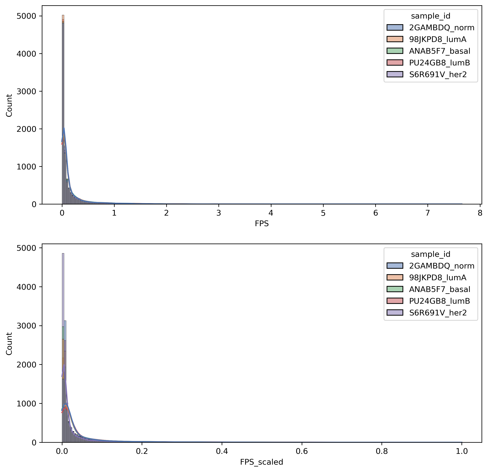
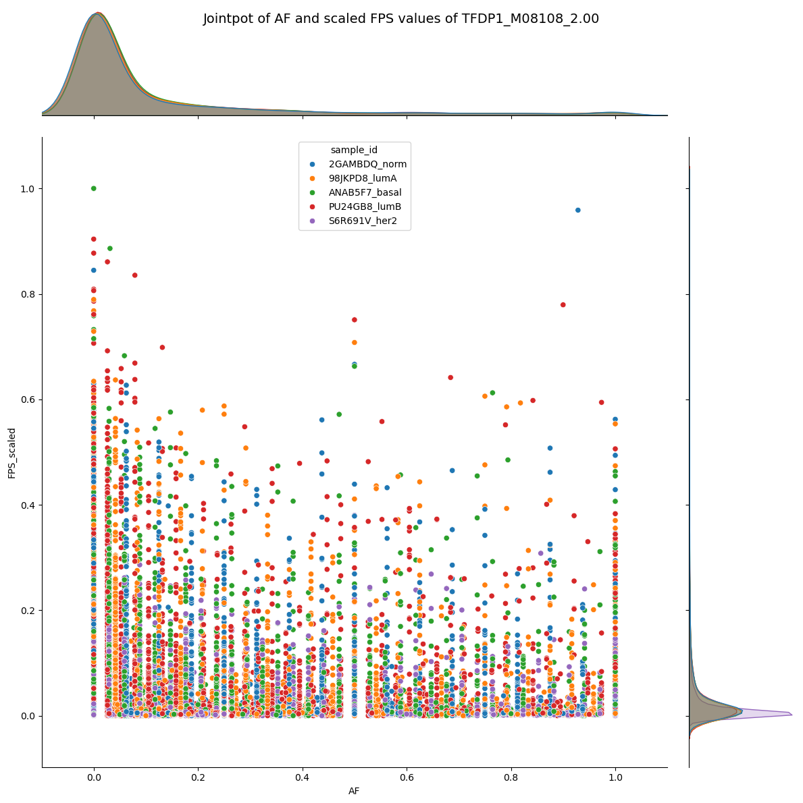
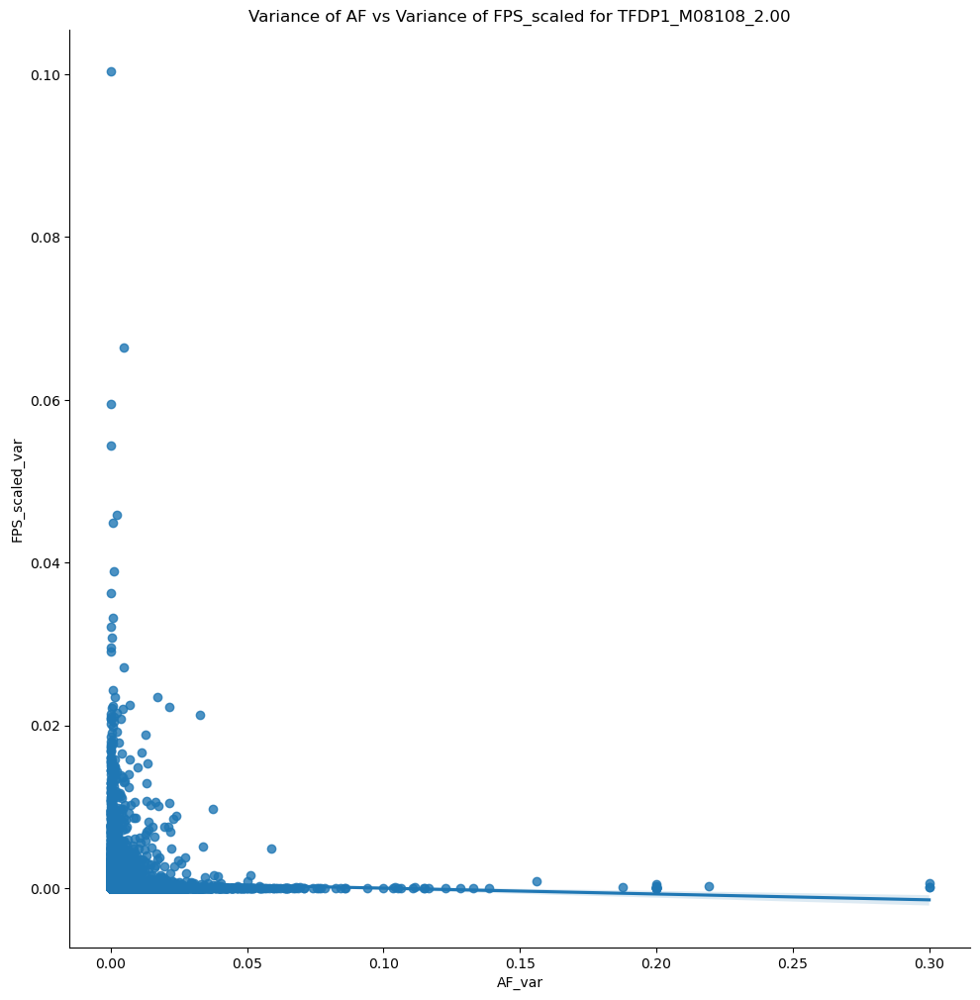
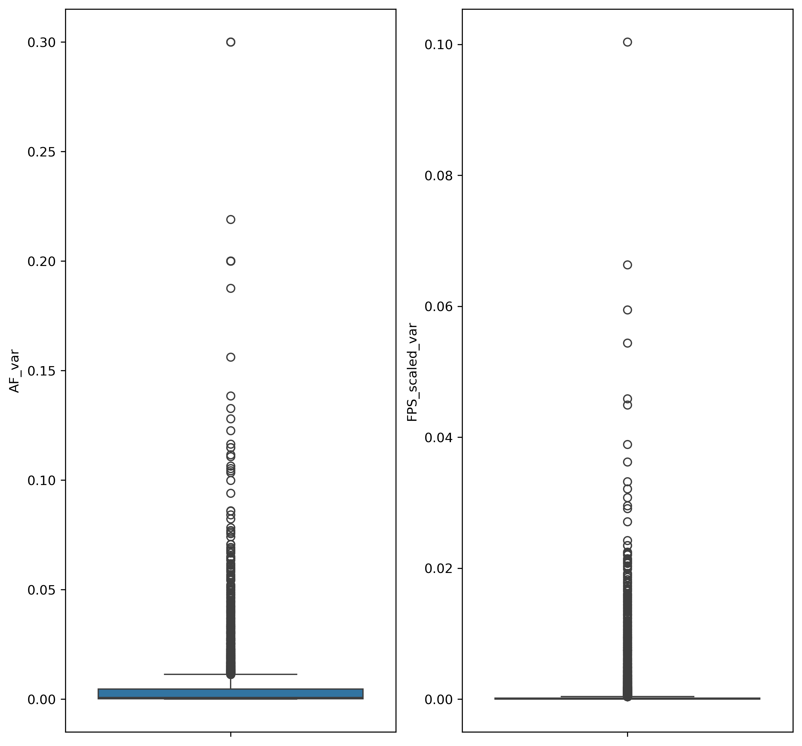
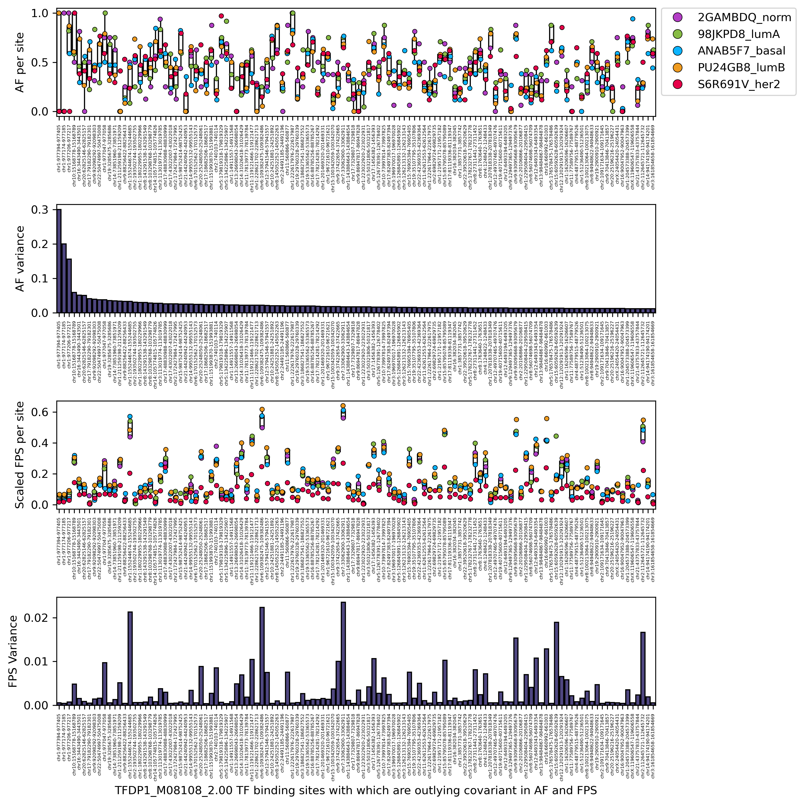
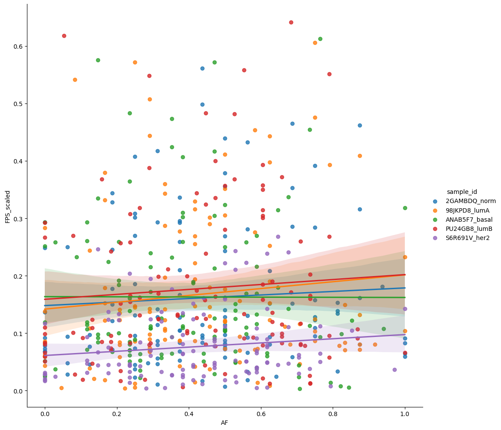
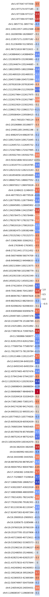
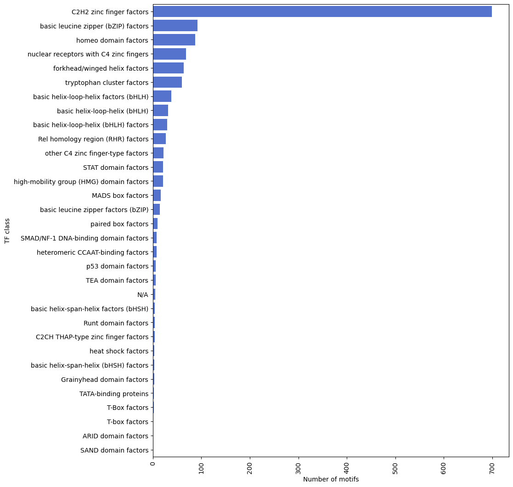

import os
import numpy as np
import pandas as pd
import seaborn as sns
import statsmodels.api as sm
import matplotlib.pyplot as plt
from natsort import index_natsortedAnalysis v5: Detecting Covariant Sites
Analysis v5: Detecting Covariant Sites
# Set color values
dutchfield = ["#e60049", "#0bb4ff", "#87bc45", "#ef9b20", "#b33dc6"]
springpastel = ["#fd7f6f", "#7eb0d5", "#b2e061", "#bd7ebe", "#ffb55a"] Calculating the Variance of the AF and FPS values
It would be quite interesting to see if for each variant site per motif, the variance of the AF and FPS values are correlated.
I.e. if a variant site has a high variance in AF values, does it also have a high variance in FPS values?
First, load the data file as dataframe and then truncate the columns to include on AF and FPS data. Next, convert the dataframe into long format.
# import the data
# filepath = '/home/users/ntu/suffiazi/scratch/outputs/tmp/input_data/E2F5_E2F5_HUMAN.H11MO.0.B_fpscore-af-varsites-combined-matrix-wide.tsv'
filepath = '../output-data/combined_matrix/TFDP1_M08108_2.00_fpscore-af-varsites-combined-matrix-wide.tsv'
dt_afps = pd.read_csv(filepath, sep='\t')
# extract motif id from filename
motif_id = os.path.basename(filepath).replace('_fpscore-af-varsites-combined-matrix-wide.tsv', '')
motif_id'TFDP1_M08108_2.00'dt_afps.head()| Chromosome | Start | End | 98JKPD8_lumA_fps | ANAB5F7_basal_fps | S6R691V_her2_fps | PU24GB8_lumB_fps | 2GAMBDQ_norm_fps | 2GAMBDQ_norm_varsite_pos | 2GAMBDQ_norm_ref_allele | ... | ANAB5F7_basal_AF | PU24GB8_lumB_varsite_pos | PU24GB8_lumB_ref_allele | PU24GB8_lumB_alt_allele | PU24GB8_lumB_AF | S6R691V_her2_varsite_pos | S6R691V_her2_ref_allele | S6R691V_her2_alt_allele | S6R691V_her2_AF | region_id | |
|---|---|---|---|---|---|---|---|---|---|---|---|---|---|---|---|---|---|---|---|---|---|
| 0 | chr1 | 191257 | 191268 | 0.00000 | 0.00000 | 0.00000 | 0.00000 | 0.00000 | NaN | NaN | ... | 0.000000 | 191258.0 | G | C | 0.026316 | NaN | NaN | NaN | 0.000000 | chr1:191257-191268 |
| 1 | chr1 | 818021 | 818032 | 0.02966 | 0.04399 | 0.02131 | 0.03470 | 0.03443 | 818025.0 | C | ... | 0.812500 | 818025.0 | C | A | 0.833333 | 818025.0 | C | A | 0.900000 | chr1:818021-818032 |
| 2 | chr1 | 818780 | 818791 | 0.02572 | 0.02376 | 0.02271 | 0.02814 | 0.03391 | NaN | NaN | ... | 0.033333 | 818783.0 | T | C | 0.055556 | 818783.0 | T | C | 0.062500 | chr1:818780-818791 |
| 3 | chr1 | 960570 | 960581 | 0.28046 | 0.33500 | 0.28495 | 0.27618 | 0.22986 | NaN | NaN | ... | 0.000000 | NaN | NaN | NaN | 0.000000 | NaN | NaN | NaN | 0.000000 | chr1:960570-960581 |
| 4 | chr1 | 977015 | 977026 | 1.10047 | 0.50514 | 0.71035 | 1.21305 | 1.30155 | 977023.0 | G | ... | 0.941176 | 977023.0 | G | A | 0.947368 | 977023.0 | G | A | 0.911765 | chr1:977015-977026 |
5 rows × 29 columns
Let’s filter the loaded table to include only the _AF and _fps columns, as well as the region_id column.
afps_df = dt_afps.filter(regex='_AF$|_fps$|_id$').copy()
afps_df.head(5)| 98JKPD8_lumA_fps | ANAB5F7_basal_fps | S6R691V_her2_fps | PU24GB8_lumB_fps | 2GAMBDQ_norm_fps | 2GAMBDQ_norm_AF | 98JKPD8_lumA_AF | ANAB5F7_basal_AF | PU24GB8_lumB_AF | S6R691V_her2_AF | region_id | |
|---|---|---|---|---|---|---|---|---|---|---|---|
| 0 | 0.00000 | 0.00000 | 0.00000 | 0.00000 | 0.00000 | 0.000 | 0.000000 | 0.000000 | 0.026316 | 0.000000 | chr1:191257-191268 |
| 1 | 0.02966 | 0.04399 | 0.02131 | 0.03470 | 0.03443 | 0.875 | 0.900000 | 0.812500 | 0.833333 | 0.900000 | chr1:818021-818032 |
| 2 | 0.02572 | 0.02376 | 0.02271 | 0.02814 | 0.03391 | 0.000 | 0.125000 | 0.033333 | 0.055556 | 0.062500 | chr1:818780-818791 |
| 3 | 0.28046 | 0.33500 | 0.28495 | 0.27618 | 0.22986 | 0.000 | 0.041667 | 0.000000 | 0.000000 | 0.000000 | chr1:960570-960581 |
| 4 | 1.10047 | 0.50514 | 0.71035 | 1.21305 | 1.30155 | 1.000 | 1.000000 | 0.941176 | 0.947368 | 0.911765 | chr1:977015-977026 |
# convert to long format
afps_df_long = afps_df.melt(id_vars=["region_id"], var_name="variable", value_name="value")
# split the variable column into sample_id and type columns using reverse split string method, which returns a dataframe of columns based on the number of splits (n=x); this can directly be assigned to new columns in the original dataframe
afps_df_long[['sample_id', 'type']] = afps_df_long['variable'].str.rsplit('_', n=1, expand=True)
# drop the redundant 'variable' column
afps_df_long = afps_df_long.drop(columns=["variable"])
# now pivot the dataframe to create new columns based on the type column
afps_df_lpv = afps_df_long.pivot(index=['region_id', 'sample_id'], columns='type', values='value').reset_index()
# remove the index name and rename the columns to match the type values
afps_df_lpv = afps_df_lpv.rename_axis(None, axis=1).rename(columns={'fps': 'FPS'})
# sort the dataframe by region_id naturally
afps_df_lpv = afps_df_lpv.reindex(index=index_natsorted(afps_df_lpv['region_id']))
afps_df_lpv = afps_df_lpv.reset_index(drop=True)
afps_df_lpv| region_id | sample_id | AF | FPS | |
|---|---|---|---|---|
| 0 | chr1:191257-191268 | 2GAMBDQ_norm | 0.000000 | 0.0 |
| 1 | chr1:191257-191268 | 98JKPD8_lumA | 0.000000 | 0.0 |
| 2 | chr1:191257-191268 | ANAB5F7_basal | 0.000000 | 0.0 |
| 3 | chr1:191257-191268 | PU24GB8_lumB | 0.026316 | 0.0 |
| 4 | chr1:191257-191268 | S6R691V_her2 | 0.000000 | 0.0 |
| ... | ... | ... | ... | ... |
| 47795 | chrY:11108019-11108030 | 2GAMBDQ_norm | 0.437500 | 0.0 |
| 47796 | chrY:11108019-11108030 | 98JKPD8_lumA | 0.100000 | 0.0 |
| 47797 | chrY:11108019-11108030 | ANAB5F7_basal | 0.382353 | 0.0 |
| 47798 | chrY:11108019-11108030 | PU24GB8_lumB | 0.264706 | 0.0 |
| 47799 | chrY:11108019-11108030 | S6R691V_her2 | 0.437500 | 0.0 |
47800 rows × 4 columns
AF–FPS Matrix
At this point, we now have both a matrix of AF and FPS values in wide form (afps_df) and the same dataset in long form (afps_df_lpv). We can scale the FPS values to be between 0 and 1 now.
# use MinMaxScaler to scale the raw fps values to range between 0 and 1
from sklearn.preprocessing import MinMaxScaler
# scale the FPS values to a range of 0-1
# Initialize a MinMaxScaler
scaler = MinMaxScaler()
# copy df
fps_df_scaled = dt_afps.filter(regex='_fps$|_id$').copy()
# set the index to 'region_id'
fps_df_scaled = fps_df_scaled.set_index('region_id')
# Fit the MinMaxScaler to the 'FPS' column and transform it
fps_df_scaled = pd.DataFrame(scaler.fit_transform(fps_df_scaled), columns=fps_df_scaled.columns, index=fps_df_scaled.index)
# rename columns by adding '_scaled' to the column names
fps_df_scaled = fps_df_scaled.add_suffix('_scaled')
fps_df_scaled| 98JKPD8_lumA_fps_scaled | ANAB5F7_basal_fps_scaled | S6R691V_her2_fps_scaled | PU24GB8_lumB_fps_scaled | 2GAMBDQ_norm_fps_scaled | |
|---|---|---|---|---|---|
| region_id | |||||
| chr1:191257-191268 | 0.000000 | 0.000000 | 0.000000 | 0.000000 | 0.000000 |
| chr1:818021-818032 | 0.007823 | 0.011176 | 0.002785 | 0.009443 | 0.009147 |
| chr1:818780-818791 | 0.006783 | 0.006036 | 0.002968 | 0.007658 | 0.009009 |
| chr1:960570-960581 | 0.073969 | 0.085110 | 0.037244 | 0.075158 | 0.061066 |
| chr1:977015-977026 | 0.290240 | 0.128336 | 0.092845 | 0.330112 | 0.345779 |
| ... | ... | ... | ... | ... | ... |
| chrX:153934861-153934872 | 0.051878 | 0.042657 | 0.022497 | 0.051831 | 0.042934 |
| chrX:154444629-154444640 | 0.012923 | 0.018879 | 0.009550 | 0.024527 | 0.011246 |
| chrX:155010397-155010408 | 0.003104 | 0.001263 | 0.001144 | 0.003532 | 0.005279 |
| chrX:155641610-155641621 | 0.003294 | 0.003158 | 0.001737 | 0.004060 | 0.004623 |
| chrY:11108019-11108030 | 0.000000 | 0.000000 | 0.000000 | 0.000000 | 0.000000 |
9560 rows × 5 columns
Now we should convert the FPS scaled dataframe into long form.
# reset index
fps_df_scaled_long = fps_df_scaled.reset_index()
# convert to long format
fps_df_scaled_long = fps_df_scaled_long.melt(id_vars=["region_id"], var_name="variable", value_name="value")
# split the variable column into sample_id and type columns using reverse split string method, which returns a dataframe of columns based on the number of splits (n=x); this can directly be assigned to new columns in the original dataframe
# Split the 'variable' column into three parts
fps_df_scaled_long[['part1', 'part2', 'part3']] = fps_df_scaled_long['variable'].str.rsplit('_', n=2, expand=True)
# Assign part1 to 'sample_id' and concatenate the other parts to form 'type'
fps_df_scaled_long['sample_id'] = fps_df_scaled_long['part1']
fps_df_scaled_long['type'] = fps_df_scaled_long['part2'].str.upper() + '_' + fps_df_scaled_long['part3']
# Drop the unnecessary columns
fps_df_scaled_long = fps_df_scaled_long.drop(['variable', 'part1', 'part2', 'part3'], axis=1)
# now pivot the dataframe to create new columns based on the type column
fps_df_scaled_lpv = fps_df_scaled_long.pivot(index=['region_id', 'sample_id'], columns='type', values='value').reset_index()
# remove the index name and rename the columns to match the type values
fps_df_scaled_lpv = fps_df_scaled_lpv.rename_axis(None, axis=1)
# sort the dataframe by region_id naturally
fps_df_scaled_lpv = fps_df_scaled_lpv.reindex(index=index_natsorted(fps_df_scaled_lpv['region_id']))
fps_df_scaled_lpv = fps_df_scaled_lpv.reset_index(drop=True)
fps_df_scaled_lpv| region_id | sample_id | FPS_scaled | |
|---|---|---|---|
| 0 | chr1:191257-191268 | 2GAMBDQ_norm | 0.0 |
| 1 | chr1:191257-191268 | 98JKPD8_lumA | 0.0 |
| 2 | chr1:191257-191268 | ANAB5F7_basal | 0.0 |
| 3 | chr1:191257-191268 | PU24GB8_lumB | 0.0 |
| 4 | chr1:191257-191268 | S6R691V_her2 | 0.0 |
| ... | ... | ... | ... |
| 47795 | chrY:11108019-11108030 | 2GAMBDQ_norm | 0.0 |
| 47796 | chrY:11108019-11108030 | 98JKPD8_lumA | 0.0 |
| 47797 | chrY:11108019-11108030 | ANAB5F7_basal | 0.0 |
| 47798 | chrY:11108019-11108030 | PU24GB8_lumB | 0.0 |
| 47799 | chrY:11108019-11108030 | S6R691V_her2 | 0.0 |
47800 rows × 3 columns
# plot fps distribution
plt.figure(figsize=(10, 5), dpi=300)
sns.kdeplot(data=fps_df_scaled_lpv, x="FPS_scaled", hue="sample_id", fill=False, common_norm=False, alpha=.5, linewidth=1)
plt.show()
Merging afps_df_lpv and fps_df_scaled_lpv
Now we can merge the two long dataframes together to get both raw FPS and scaled FPS values in one dataframe.
afps_df_lpv| region_id | sample_id | AF | FPS | |
|---|---|---|---|---|
| 0 | chr1:191257-191268 | 2GAMBDQ_norm | 0.000000 | 0.0 |
| 1 | chr1:191257-191268 | 98JKPD8_lumA | 0.000000 | 0.0 |
| 2 | chr1:191257-191268 | ANAB5F7_basal | 0.000000 | 0.0 |
| 3 | chr1:191257-191268 | PU24GB8_lumB | 0.026316 | 0.0 |
| 4 | chr1:191257-191268 | S6R691V_her2 | 0.000000 | 0.0 |
| ... | ... | ... | ... | ... |
| 47795 | chrY:11108019-11108030 | 2GAMBDQ_norm | 0.437500 | 0.0 |
| 47796 | chrY:11108019-11108030 | 98JKPD8_lumA | 0.100000 | 0.0 |
| 47797 | chrY:11108019-11108030 | ANAB5F7_basal | 0.382353 | 0.0 |
| 47798 | chrY:11108019-11108030 | PU24GB8_lumB | 0.264706 | 0.0 |
| 47799 | chrY:11108019-11108030 | S6R691V_her2 | 0.437500 | 0.0 |
47800 rows × 4 columns
# merge two dataframes on region_id and sample_id
afps_full_dfl = afps_df_lpv.merge(fps_df_scaled_lpv, on=['region_id', 'sample_id'])
afps_full_dfl| region_id | sample_id | AF | FPS | FPS_scaled | |
|---|---|---|---|---|---|
| 0 | chr1:191257-191268 | 2GAMBDQ_norm | 0.000000 | 0.0 | 0.0 |
| 1 | chr1:191257-191268 | 98JKPD8_lumA | 0.000000 | 0.0 | 0.0 |
| 2 | chr1:191257-191268 | ANAB5F7_basal | 0.000000 | 0.0 | 0.0 |
| 3 | chr1:191257-191268 | PU24GB8_lumB | 0.026316 | 0.0 | 0.0 |
| 4 | chr1:191257-191268 | S6R691V_her2 | 0.000000 | 0.0 | 0.0 |
| ... | ... | ... | ... | ... | ... |
| 47795 | chrY:11108019-11108030 | 2GAMBDQ_norm | 0.437500 | 0.0 | 0.0 |
| 47796 | chrY:11108019-11108030 | 98JKPD8_lumA | 0.100000 | 0.0 | 0.0 |
| 47797 | chrY:11108019-11108030 | ANAB5F7_basal | 0.382353 | 0.0 | 0.0 |
| 47798 | chrY:11108019-11108030 | PU24GB8_lumB | 0.264706 | 0.0 | 0.0 |
| 47799 | chrY:11108019-11108030 | S6R691V_her2 | 0.437500 | 0.0 | 0.0 |
47800 rows × 5 columns
# Create a figure and a 2x2 grid of subplots
fig, axs = plt.subplots(2, 1, figsize=(10, 10), dpi=300)
sns.histplot(data=afps_full_dfl, x="FPS", hue="sample_id", bins=200, kde=True, palette="deep", ax=axs[0])
sns.histplot(data=afps_full_dfl, x="FPS_scaled", hue="sample_id", bins=200, kde=True, palette="deep", ax=axs[1])
# # now draw a subset plot where x is above a certain threshold
# sns.histplot(data=afps_full_dfl[afps_full_dfl['FPS'] > 0.5], x="FPS", hue="sample_id", bins=200, kde=True, palette="deep", ax=axs[2])
# plt.title(f"FPS distribution of {motif_id} in all samples")
plt.show()
g = sns.jointplot(data=afps_full_dfl, x='AF', y='FPS_scaled', kind='scatter', hue='sample_id', height=12)
plt.xlim(-0.1, 1.1)
g.figure.suptitle(f"Jointpot of AF and scaled FPS values of {motif_id}", fontsize=14)Text(0.5, 0.98, 'Jointpot of AF and scaled FPS values of TFDP1_M08108_2.00')
Filtering Zero Sites
We should filter out the sites that have zero AF values in ALL subtypes, as these are not informative for our analysis. We will also filter out the sites that have zero FPS values in ALL subtypes.
afps_full_dfl| region_id | sample_id | AF | FPS | FPS_scaled | |
|---|---|---|---|---|---|
| 0 | chr1:191257-191268 | 2GAMBDQ_norm | 0.000000 | 0.0 | 0.0 |
| 1 | chr1:191257-191268 | 98JKPD8_lumA | 0.000000 | 0.0 | 0.0 |
| 2 | chr1:191257-191268 | ANAB5F7_basal | 0.000000 | 0.0 | 0.0 |
| 3 | chr1:191257-191268 | PU24GB8_lumB | 0.026316 | 0.0 | 0.0 |
| 4 | chr1:191257-191268 | S6R691V_her2 | 0.000000 | 0.0 | 0.0 |
| ... | ... | ... | ... | ... | ... |
| 47795 | chrY:11108019-11108030 | 2GAMBDQ_norm | 0.437500 | 0.0 | 0.0 |
| 47796 | chrY:11108019-11108030 | 98JKPD8_lumA | 0.100000 | 0.0 | 0.0 |
| 47797 | chrY:11108019-11108030 | ANAB5F7_basal | 0.382353 | 0.0 | 0.0 |
| 47798 | chrY:11108019-11108030 | PU24GB8_lumB | 0.264706 | 0.0 | 0.0 |
| 47799 | chrY:11108019-11108030 | S6R691V_her2 | 0.437500 | 0.0 | 0.0 |
47800 rows × 5 columns
FPS value == 0 means that the raw FPS values across subtypes are zero, i.e. there is no evidence of footprinting at all at these sites despite a TFBS matching a motif being present (assigned by TOBIAS). AF value == 0 means that there is no evidence of a variant genotype at these sites across the samples making up a subtype.
# filter out unique region_id rows that have fps == 0 across the sample_ids and AF == 0
# group by 'region_id' first
merged_filt_dfl = afps_full_dfl.groupby('region_id').filter(lambda x: x['FPS'].sum() > 0 and x['AF'].sum() > 0)
merged_filt_dfl| region_id | sample_id | AF | FPS | FPS_scaled | |
|---|---|---|---|---|---|
| 5 | chr1:818021-818032 | 2GAMBDQ_norm | 0.875000 | 0.03443 | 0.009147 |
| 6 | chr1:818021-818032 | 98JKPD8_lumA | 0.900000 | 0.02966 | 0.007823 |
| 7 | chr1:818021-818032 | ANAB5F7_basal | 0.812500 | 0.04399 | 0.011176 |
| 8 | chr1:818021-818032 | PU24GB8_lumB | 0.833333 | 0.03470 | 0.009443 |
| 9 | chr1:818021-818032 | S6R691V_her2 | 0.900000 | 0.02131 | 0.002785 |
| ... | ... | ... | ... | ... | ... |
| 47790 | chrX:155641610-155641621 | 2GAMBDQ_norm | 0.000000 | 0.01740 | 0.004623 |
| 47791 | chrX:155641610-155641621 | 98JKPD8_lumA | 0.000000 | 0.01249 | 0.003294 |
| 47792 | chrX:155641610-155641621 | ANAB5F7_basal | 0.000000 | 0.01243 | 0.003158 |
| 47793 | chrX:155641610-155641621 | PU24GB8_lumB | 0.029412 | 0.01492 | 0.004060 |
| 47794 | chrX:155641610-155641621 | S6R691V_her2 | 0.000000 | 0.01329 | 0.001737 |
43530 rows × 5 columns
Calculating Variation Statistics
With the full data table cleaned up into a long format, we can now calculate the variation statistics for each region. We will calculate variance (Var).
- First calculate statistics on the raw FPS data.
# extract fps columns
fps_df = dt_afps.filter(regex='_fps$|_id$').copy()
fps_df| 98JKPD8_lumA_fps | ANAB5F7_basal_fps | S6R691V_her2_fps | PU24GB8_lumB_fps | 2GAMBDQ_norm_fps | region_id | |
|---|---|---|---|---|---|---|
| 0 | 0.00000 | 0.00000 | 0.00000 | 0.00000 | 0.00000 | chr1:191257-191268 |
| 1 | 0.02966 | 0.04399 | 0.02131 | 0.03470 | 0.03443 | chr1:818021-818032 |
| 2 | 0.02572 | 0.02376 | 0.02271 | 0.02814 | 0.03391 | chr1:818780-818791 |
| 3 | 0.28046 | 0.33500 | 0.28495 | 0.27618 | 0.22986 | chr1:960570-960581 |
| 4 | 1.10047 | 0.50514 | 0.71035 | 1.21305 | 1.30155 | chr1:977015-977026 |
| ... | ... | ... | ... | ... | ... | ... |
| 9555 | 0.19670 | 0.16790 | 0.17212 | 0.19046 | 0.16161 | chrX:153934861-153934872 |
| 9556 | 0.04900 | 0.07431 | 0.07307 | 0.09013 | 0.04233 | chrX:154444629-154444640 |
| 9557 | 0.01177 | 0.00497 | 0.00875 | 0.01298 | 0.01987 | chrX:155010397-155010408 |
| 9558 | 0.01249 | 0.01243 | 0.01329 | 0.01492 | 0.01740 | chrX:155641610-155641621 |
| 9559 | 0.00000 | 0.00000 | 0.00000 | 0.00000 | 0.00000 | chrY:11108019-11108030 |
9560 rows × 6 columns
Now filter out the rows whose region_id is not in the region_id column of merged_filt. First, reduce the repeated region_id column to unique values in merged_filt.
# this creates an array
merged_filt_uniq_region_id = merged_filt_dfl['region_id'].unique()# then using this array, keep only the rows in the fps_df that have `region_id` values in the array
fps_df_filt = fps_df[fps_df['region_id'].isin(merged_filt_uniq_region_id)]
fps_df_filt| 98JKPD8_lumA_fps | ANAB5F7_basal_fps | S6R691V_her2_fps | PU24GB8_lumB_fps | 2GAMBDQ_norm_fps | region_id | |
|---|---|---|---|---|---|---|
| 1 | 0.02966 | 0.04399 | 0.02131 | 0.03470 | 0.03443 | chr1:818021-818032 |
| 2 | 0.02572 | 0.02376 | 0.02271 | 0.02814 | 0.03391 | chr1:818780-818791 |
| 3 | 0.28046 | 0.33500 | 0.28495 | 0.27618 | 0.22986 | chr1:960570-960581 |
| 4 | 1.10047 | 0.50514 | 0.71035 | 1.21305 | 1.30155 | chr1:977015-977026 |
| 5 | 0.88179 | 0.40974 | 0.53173 | 0.98628 | 1.07101 | chr1:977047-977058 |
| ... | ... | ... | ... | ... | ... | ... |
| 9552 | 0.02192 | 0.03699 | 0.01875 | 0.01472 | 0.02839 | chrX:153642534-153642545 |
| 9555 | 0.19670 | 0.16790 | 0.17212 | 0.19046 | 0.16161 | chrX:153934861-153934872 |
| 9556 | 0.04900 | 0.07431 | 0.07307 | 0.09013 | 0.04233 | chrX:154444629-154444640 |
| 9557 | 0.01177 | 0.00497 | 0.00875 | 0.01298 | 0.01987 | chrX:155010397-155010408 |
| 9558 | 0.01249 | 0.01243 | 0.01329 | 0.01492 | 0.01740 | chrX:155641610-155641621 |
8706 rows × 6 columns
# calculate variance of fps values across samples per region_id and add to a new column called 'fps_var'
fps_df_filt_ind = fps_df_filt.set_index('region_id')
fps_df_filt_ind['FPS_var'] = fps_df_filt_ind.var(axis=1)
fps_df_filt_ind| 98JKPD8_lumA_fps | ANAB5F7_basal_fps | S6R691V_her2_fps | PU24GB8_lumB_fps | 2GAMBDQ_norm_fps | FPS_var | |
|---|---|---|---|---|---|---|
| region_id | ||||||
| chr1:818021-818032 | 0.02966 | 0.04399 | 0.02131 | 0.03470 | 0.03443 | 0.000068 |
| chr1:818780-818791 | 0.02572 | 0.02376 | 0.02271 | 0.02814 | 0.03391 | 0.000020 |
| chr1:960570-960581 | 0.28046 | 0.33500 | 0.28495 | 0.27618 | 0.22986 | 0.001393 |
| chr1:977015-977026 | 1.10047 | 0.50514 | 0.71035 | 1.21305 | 1.30155 | 0.117365 |
| chr1:977047-977058 | 0.88179 | 0.40974 | 0.53173 | 0.98628 | 1.07101 | 0.084064 |
| ... | ... | ... | ... | ... | ... | ... |
| chrX:153642534-153642545 | 0.02192 | 0.03699 | 0.01875 | 0.01472 | 0.02839 | 0.000076 |
| chrX:153934861-153934872 | 0.19670 | 0.16790 | 0.17212 | 0.19046 | 0.16161 | 0.000227 |
| chrX:154444629-154444640 | 0.04900 | 0.07431 | 0.07307 | 0.09013 | 0.04233 | 0.000388 |
| chrX:155010397-155010408 | 0.01177 | 0.00497 | 0.00875 | 0.01298 | 0.01987 | 0.000031 |
| chrX:155641610-155641621 | 0.01249 | 0.01243 | 0.01329 | 0.01492 | 0.01740 | 0.000004 |
8706 rows × 6 columns
- Then do the same on the fps scaled data.
Filter out the rows whose region_id is not in the region_id column of merged_filt_scaled.
fps_df_scaled| 98JKPD8_lumA_fps_scaled | ANAB5F7_basal_fps_scaled | S6R691V_her2_fps_scaled | PU24GB8_lumB_fps_scaled | 2GAMBDQ_norm_fps_scaled | |
|---|---|---|---|---|---|
| region_id | |||||
| chr1:191257-191268 | 0.000000 | 0.000000 | 0.000000 | 0.000000 | 0.000000 |
| chr1:818021-818032 | 0.007823 | 0.011176 | 0.002785 | 0.009443 | 0.009147 |
| chr1:818780-818791 | 0.006783 | 0.006036 | 0.002968 | 0.007658 | 0.009009 |
| chr1:960570-960581 | 0.073969 | 0.085110 | 0.037244 | 0.075158 | 0.061066 |
| chr1:977015-977026 | 0.290240 | 0.128336 | 0.092845 | 0.330112 | 0.345779 |
| ... | ... | ... | ... | ... | ... |
| chrX:153934861-153934872 | 0.051878 | 0.042657 | 0.022497 | 0.051831 | 0.042934 |
| chrX:154444629-154444640 | 0.012923 | 0.018879 | 0.009550 | 0.024527 | 0.011246 |
| chrX:155010397-155010408 | 0.003104 | 0.001263 | 0.001144 | 0.003532 | 0.005279 |
| chrX:155641610-155641621 | 0.003294 | 0.003158 | 0.001737 | 0.004060 | 0.004623 |
| chrY:11108019-11108030 | 0.000000 | 0.000000 | 0.000000 | 0.000000 | 0.000000 |
9560 rows × 5 columns
# region_id in the scaled df is already used as index, so filter by index
fps_df_scaled_filt = fps_df_scaled[fps_df_scaled.index.isin(merged_filt_uniq_region_id)]
fps_df_scaled_filt| 98JKPD8_lumA_fps_scaled | ANAB5F7_basal_fps_scaled | S6R691V_her2_fps_scaled | PU24GB8_lumB_fps_scaled | 2GAMBDQ_norm_fps_scaled | |
|---|---|---|---|---|---|
| region_id | |||||
| chr1:818021-818032 | 0.007823 | 0.011176 | 0.002785 | 0.009443 | 0.009147 |
| chr1:818780-818791 | 0.006783 | 0.006036 | 0.002968 | 0.007658 | 0.009009 |
| chr1:960570-960581 | 0.073969 | 0.085110 | 0.037244 | 0.075158 | 0.061066 |
| chr1:977015-977026 | 0.290240 | 0.128336 | 0.092845 | 0.330112 | 0.345779 |
| chr1:977047-977058 | 0.232565 | 0.104098 | 0.069499 | 0.268400 | 0.284532 |
| ... | ... | ... | ... | ... | ... |
| chrX:153642534-153642545 | 0.005781 | 0.009398 | 0.002451 | 0.004006 | 0.007542 |
| chrX:153934861-153934872 | 0.051878 | 0.042657 | 0.022497 | 0.051831 | 0.042934 |
| chrX:154444629-154444640 | 0.012923 | 0.018879 | 0.009550 | 0.024527 | 0.011246 |
| chrX:155010397-155010408 | 0.003104 | 0.001263 | 0.001144 | 0.003532 | 0.005279 |
| chrX:155641610-155641621 | 0.003294 | 0.003158 | 0.001737 | 0.004060 | 0.004623 |
8706 rows × 5 columns
# copy the slice
fps_df_scaled_filt_ind = fps_df_scaled_filt.copy()
fps_df_scaled_filt_ind| 98JKPD8_lumA_fps_scaled | ANAB5F7_basal_fps_scaled | S6R691V_her2_fps_scaled | PU24GB8_lumB_fps_scaled | 2GAMBDQ_norm_fps_scaled | |
|---|---|---|---|---|---|
| region_id | |||||
| chr1:818021-818032 | 0.007823 | 0.011176 | 0.002785 | 0.009443 | 0.009147 |
| chr1:818780-818791 | 0.006783 | 0.006036 | 0.002968 | 0.007658 | 0.009009 |
| chr1:960570-960581 | 0.073969 | 0.085110 | 0.037244 | 0.075158 | 0.061066 |
| chr1:977015-977026 | 0.290240 | 0.128336 | 0.092845 | 0.330112 | 0.345779 |
| chr1:977047-977058 | 0.232565 | 0.104098 | 0.069499 | 0.268400 | 0.284532 |
| ... | ... | ... | ... | ... | ... |
| chrX:153642534-153642545 | 0.005781 | 0.009398 | 0.002451 | 0.004006 | 0.007542 |
| chrX:153934861-153934872 | 0.051878 | 0.042657 | 0.022497 | 0.051831 | 0.042934 |
| chrX:154444629-154444640 | 0.012923 | 0.018879 | 0.009550 | 0.024527 | 0.011246 |
| chrX:155010397-155010408 | 0.003104 | 0.001263 | 0.001144 | 0.003532 | 0.005279 |
| chrX:155641610-155641621 | 0.003294 | 0.003158 | 0.001737 | 0.004060 | 0.004623 |
8706 rows × 5 columns
# calculate variance of fps_scaled values across samples per region_id and add to a new column called 'fps_scaled_var'
fps_df_scaled_filt_ind['FPS_scaled_var'] = fps_df_scaled_filt_ind.var(axis=1)
fps_df_scaled_filt_ind| 98JKPD8_lumA_fps_scaled | ANAB5F7_basal_fps_scaled | S6R691V_her2_fps_scaled | PU24GB8_lumB_fps_scaled | 2GAMBDQ_norm_fps_scaled | FPS_scaled_var | |
|---|---|---|---|---|---|---|
| region_id | ||||||
| chr1:818021-818032 | 0.007823 | 0.011176 | 0.002785 | 0.009443 | 0.009147 | 0.000010 |
| chr1:818780-818791 | 0.006783 | 0.006036 | 0.002968 | 0.007658 | 0.009009 | 0.000005 |
| chr1:960570-960581 | 0.073969 | 0.085110 | 0.037244 | 0.075158 | 0.061066 | 0.000341 |
| chr1:977015-977026 | 0.290240 | 0.128336 | 0.092845 | 0.330112 | 0.345779 | 0.013981 |
| chr1:977047-977058 | 0.232565 | 0.104098 | 0.069499 | 0.268400 | 0.284532 | 0.009694 |
| ... | ... | ... | ... | ... | ... | ... |
| chrX:153642534-153642545 | 0.005781 | 0.009398 | 0.002451 | 0.004006 | 0.007542 | 0.000008 |
| chrX:153934861-153934872 | 0.051878 | 0.042657 | 0.022497 | 0.051831 | 0.042934 | 0.000144 |
| chrX:154444629-154444640 | 0.012923 | 0.018879 | 0.009550 | 0.024527 | 0.011246 | 0.000038 |
| chrX:155010397-155010408 | 0.003104 | 0.001263 | 0.001144 | 0.003532 | 0.005279 | 0.000003 |
| chrX:155641610-155641621 | 0.003294 | 0.003158 | 0.001737 | 0.004060 | 0.004623 | 0.000001 |
8706 rows × 6 columns
- Now do the same for the AF data.
# Do the same for AF values
# extract af columns
af_df = dt_afps.filter(regex='_AF$|_id$')
af_df| 2GAMBDQ_norm_AF | 98JKPD8_lumA_AF | ANAB5F7_basal_AF | PU24GB8_lumB_AF | S6R691V_her2_AF | region_id | |
|---|---|---|---|---|---|---|
| 0 | 0.000000 | 0.000000 | 0.000000 | 0.026316 | 0.000000 | chr1:191257-191268 |
| 1 | 0.875000 | 0.900000 | 0.812500 | 0.833333 | 0.900000 | chr1:818021-818032 |
| 2 | 0.000000 | 0.125000 | 0.033333 | 0.055556 | 0.062500 | chr1:818780-818791 |
| 3 | 0.000000 | 0.041667 | 0.000000 | 0.000000 | 0.000000 | chr1:960570-960581 |
| 4 | 1.000000 | 1.000000 | 0.941176 | 0.947368 | 0.911765 | chr1:977015-977026 |
| ... | ... | ... | ... | ... | ... | ... |
| 9555 | 0.062500 | 0.000000 | 0.000000 | 0.000000 | 0.000000 | chrX:153934861-153934872 |
| 9556 | 0.000000 | 0.125000 | 0.058824 | 0.105263 | 0.000000 | chrX:154444629-154444640 |
| 9557 | 0.083333 | 0.312500 | 0.000000 | 0.392857 | 0.100000 | chrX:155010397-155010408 |
| 9558 | 0.000000 | 0.000000 | 0.000000 | 0.029412 | 0.000000 | chrX:155641610-155641621 |
| 9559 | 0.437500 | 0.100000 | 0.382353 | 0.264706 | 0.437500 | chrY:11108019-11108030 |
9560 rows × 6 columns
# filter by region_id
af_df_filt = af_df[af_df['region_id'].isin(merged_filt_uniq_region_id)]
af_df_filt| 2GAMBDQ_norm_AF | 98JKPD8_lumA_AF | ANAB5F7_basal_AF | PU24GB8_lumB_AF | S6R691V_her2_AF | region_id | |
|---|---|---|---|---|---|---|
| 1 | 0.875000 | 0.900000 | 0.812500 | 0.833333 | 0.900000 | chr1:818021-818032 |
| 2 | 0.000000 | 0.125000 | 0.033333 | 0.055556 | 0.062500 | chr1:818780-818791 |
| 3 | 0.000000 | 0.041667 | 0.000000 | 0.000000 | 0.000000 | chr1:960570-960581 |
| 4 | 1.000000 | 1.000000 | 0.941176 | 0.947368 | 0.911765 | chr1:977015-977026 |
| 5 | 0.750000 | 1.000000 | 0.500000 | 0.789474 | 0.588235 | chr1:977047-977058 |
| ... | ... | ... | ... | ... | ... | ... |
| 9552 | 0.062500 | 0.000000 | 0.000000 | 0.000000 | 0.000000 | chrX:153642534-153642545 |
| 9555 | 0.062500 | 0.000000 | 0.000000 | 0.000000 | 0.000000 | chrX:153934861-153934872 |
| 9556 | 0.000000 | 0.125000 | 0.058824 | 0.105263 | 0.000000 | chrX:154444629-154444640 |
| 9557 | 0.083333 | 0.312500 | 0.000000 | 0.392857 | 0.100000 | chrX:155010397-155010408 |
| 9558 | 0.000000 | 0.000000 | 0.000000 | 0.029412 | 0.000000 | chrX:155641610-155641621 |
8706 rows × 6 columns
af_df_filt_ind = af_df_filt.set_index('region_id')
# then calculate variance of af values across samples per region_id and add to a new column called 'af_var'
af_df_filt_ind['AF_var'] = af_df_filt_ind.var(axis=1)
af_df_filt_ind| 2GAMBDQ_norm_AF | 98JKPD8_lumA_AF | ANAB5F7_basal_AF | PU24GB8_lumB_AF | S6R691V_her2_AF | AF_var | |
|---|---|---|---|---|---|---|
| region_id | ||||||
| chr1:818021-818032 | 0.875000 | 0.900000 | 0.812500 | 0.833333 | 0.900000 | 0.001576 |
| chr1:818780-818791 | 0.000000 | 0.125000 | 0.033333 | 0.055556 | 0.062500 | 0.002113 |
| chr1:960570-960581 | 0.000000 | 0.041667 | 0.000000 | 0.000000 | 0.000000 | 0.000347 |
| chr1:977015-977026 | 1.000000 | 1.000000 | 0.941176 | 0.947368 | 0.911765 | 0.001510 |
| chr1:977047-977058 | 0.750000 | 1.000000 | 0.500000 | 0.789474 | 0.588235 | 0.037434 |
| ... | ... | ... | ... | ... | ... | ... |
| chrX:153642534-153642545 | 0.062500 | 0.000000 | 0.000000 | 0.000000 | 0.000000 | 0.000781 |
| chrX:153934861-153934872 | 0.062500 | 0.000000 | 0.000000 | 0.000000 | 0.000000 | 0.000781 |
| chrX:154444629-154444640 | 0.000000 | 0.125000 | 0.058824 | 0.105263 | 0.000000 | 0.003363 |
| chrX:155010397-155010408 | 0.083333 | 0.312500 | 0.000000 | 0.392857 | 0.100000 | 0.027746 |
| chrX:155641610-155641621 | 0.000000 | 0.000000 | 0.000000 | 0.029412 | 0.000000 | 0.000173 |
8706 rows × 6 columns
- Now merge the statistics tables together on
region_idindex.
fps_filt_var = fps_df_filt_ind.filter(regex='_var$|_id$').copy()
fps_filt_var| FPS_var | |
|---|---|
| region_id | |
| chr1:818021-818032 | 0.000068 |
| chr1:818780-818791 | 0.000020 |
| chr1:960570-960581 | 0.001393 |
| chr1:977015-977026 | 0.117365 |
| chr1:977047-977058 | 0.084064 |
| ... | ... |
| chrX:153642534-153642545 | 0.000076 |
| chrX:153934861-153934872 | 0.000227 |
| chrX:154444629-154444640 | 0.000388 |
| chrX:155010397-155010408 | 0.000031 |
| chrX:155641610-155641621 | 0.000004 |
8706 rows × 1 columns
fps_sc_filt_var = fps_df_scaled_filt_ind.filter(regex='_var$|_id$').copy()
af_filt_var = af_df_filt_ind.filter(regex='_var$|_id$').copy()
# merge on region_id index from both tables
merged_var_tmp = fps_filt_var.merge(fps_sc_filt_var, left_index=True, right_index=True)
# now merge with af_df
merged_var = merged_var_tmp.merge(af_filt_var, left_index=True, right_index=True)
merged_var| FPS_var | FPS_scaled_var | AF_var | |
|---|---|---|---|
| region_id | |||
| chr1:818021-818032 | 0.000068 | 0.000010 | 0.001576 |
| chr1:818780-818791 | 0.000020 | 0.000005 | 0.002113 |
| chr1:960570-960581 | 0.001393 | 0.000341 | 0.000347 |
| chr1:977015-977026 | 0.117365 | 0.013981 | 0.001510 |
| chr1:977047-977058 | 0.084064 | 0.009694 | 0.037434 |
| ... | ... | ... | ... |
| chrX:153642534-153642545 | 0.000076 | 0.000008 | 0.000781 |
| chrX:153934861-153934872 | 0.000227 | 0.000144 | 0.000781 |
| chrX:154444629-154444640 | 0.000388 | 0.000038 | 0.003363 |
| chrX:155010397-155010408 | 0.000031 | 0.000003 | 0.027746 |
| chrX:155641610-155641621 | 0.000004 | 0.000001 | 0.000173 |
8706 rows × 3 columns
Now we have a table of stats data to merge with the merge_filt raw data.
# set the index to 'region_id'
merged_filt_i = merged_filt_dfl.set_index('region_id')
merged_filt_i| sample_id | AF | FPS | FPS_scaled | |
|---|---|---|---|---|
| region_id | ||||
| chr1:818021-818032 | 2GAMBDQ_norm | 0.875000 | 0.03443 | 0.009147 |
| chr1:818021-818032 | 98JKPD8_lumA | 0.900000 | 0.02966 | 0.007823 |
| chr1:818021-818032 | ANAB5F7_basal | 0.812500 | 0.04399 | 0.011176 |
| chr1:818021-818032 | PU24GB8_lumB | 0.833333 | 0.03470 | 0.009443 |
| chr1:818021-818032 | S6R691V_her2 | 0.900000 | 0.02131 | 0.002785 |
| ... | ... | ... | ... | ... |
| chrX:155641610-155641621 | 2GAMBDQ_norm | 0.000000 | 0.01740 | 0.004623 |
| chrX:155641610-155641621 | 98JKPD8_lumA | 0.000000 | 0.01249 | 0.003294 |
| chrX:155641610-155641621 | ANAB5F7_basal | 0.000000 | 0.01243 | 0.003158 |
| chrX:155641610-155641621 | PU24GB8_lumB | 0.029412 | 0.01492 | 0.004060 |
| chrX:155641610-155641621 | S6R691V_her2 | 0.000000 | 0.01329 | 0.001737 |
43530 rows × 4 columns
# merge afps_full_dfli with stats df on region_id
merged_stat = merged_filt_i.merge(merged_var, left_index=True, right_index=True, how='left')
merged_stat| sample_id | AF | FPS | FPS_scaled | FPS_var | FPS_scaled_var | AF_var | |
|---|---|---|---|---|---|---|---|
| region_id | |||||||
| chr1:818021-818032 | 2GAMBDQ_norm | 0.875000 | 0.03443 | 0.009147 | 0.000068 | 0.000010 | 0.001576 |
| chr1:818021-818032 | 98JKPD8_lumA | 0.900000 | 0.02966 | 0.007823 | 0.000068 | 0.000010 | 0.001576 |
| chr1:818021-818032 | ANAB5F7_basal | 0.812500 | 0.04399 | 0.011176 | 0.000068 | 0.000010 | 0.001576 |
| chr1:818021-818032 | PU24GB8_lumB | 0.833333 | 0.03470 | 0.009443 | 0.000068 | 0.000010 | 0.001576 |
| chr1:818021-818032 | S6R691V_her2 | 0.900000 | 0.02131 | 0.002785 | 0.000068 | 0.000010 | 0.001576 |
| ... | ... | ... | ... | ... | ... | ... | ... |
| chrX:155641610-155641621 | 2GAMBDQ_norm | 0.000000 | 0.01740 | 0.004623 | 0.000004 | 0.000001 | 0.000173 |
| chrX:155641610-155641621 | 98JKPD8_lumA | 0.000000 | 0.01249 | 0.003294 | 0.000004 | 0.000001 | 0.000173 |
| chrX:155641610-155641621 | ANAB5F7_basal | 0.000000 | 0.01243 | 0.003158 | 0.000004 | 0.000001 | 0.000173 |
| chrX:155641610-155641621 | PU24GB8_lumB | 0.029412 | 0.01492 | 0.004060 | 0.000004 | 0.000001 | 0.000173 |
| chrX:155641610-155641621 | S6R691V_her2 | 0.000000 | 0.01329 | 0.001737 | 0.000004 | 0.000001 | 0.000173 |
43530 rows × 7 columns
# drop the FPS and FPS_var columns
merged_stat = merged_stat.drop(columns=merged_stat.filter(regex='FPS_var|FPS$').columns)
merged_stat| sample_id | AF | FPS_scaled | FPS_scaled_var | AF_var | |
|---|---|---|---|---|---|
| region_id | |||||
| chr1:818021-818032 | 2GAMBDQ_norm | 0.875000 | 0.009147 | 0.000010 | 0.001576 |
| chr1:818021-818032 | 98JKPD8_lumA | 0.900000 | 0.007823 | 0.000010 | 0.001576 |
| chr1:818021-818032 | ANAB5F7_basal | 0.812500 | 0.011176 | 0.000010 | 0.001576 |
| chr1:818021-818032 | PU24GB8_lumB | 0.833333 | 0.009443 | 0.000010 | 0.001576 |
| chr1:818021-818032 | S6R691V_her2 | 0.900000 | 0.002785 | 0.000010 | 0.001576 |
| ... | ... | ... | ... | ... | ... |
| chrX:155641610-155641621 | 2GAMBDQ_norm | 0.000000 | 0.004623 | 0.000001 | 0.000173 |
| chrX:155641610-155641621 | 98JKPD8_lumA | 0.000000 | 0.003294 | 0.000001 | 0.000173 |
| chrX:155641610-155641621 | ANAB5F7_basal | 0.000000 | 0.003158 | 0.000001 | 0.000173 |
| chrX:155641610-155641621 | PU24GB8_lumB | 0.029412 | 0.004060 | 0.000001 | 0.000173 |
| chrX:155641610-155641621 | S6R691V_her2 | 0.000000 | 0.001737 | 0.000001 | 0.000173 |
43530 rows × 5 columns
# rearrange columns
merged_stat = merged_stat[['sample_id', 'AF', 'FPS_scaled', 'AF_var', 'FPS_scaled_var']]
merged_stat| sample_id | AF | FPS_scaled | AF_var | FPS_scaled_var | |
|---|---|---|---|---|---|
| region_id | |||||
| chr1:818021-818032 | 2GAMBDQ_norm | 0.875000 | 0.009147 | 0.001576 | 0.000010 |
| chr1:818021-818032 | 98JKPD8_lumA | 0.900000 | 0.007823 | 0.001576 | 0.000010 |
| chr1:818021-818032 | ANAB5F7_basal | 0.812500 | 0.011176 | 0.001576 | 0.000010 |
| chr1:818021-818032 | PU24GB8_lumB | 0.833333 | 0.009443 | 0.001576 | 0.000010 |
| chr1:818021-818032 | S6R691V_her2 | 0.900000 | 0.002785 | 0.001576 | 0.000010 |
| ... | ... | ... | ... | ... | ... |
| chrX:155641610-155641621 | 2GAMBDQ_norm | 0.000000 | 0.004623 | 0.000173 | 0.000001 |
| chrX:155641610-155641621 | 98JKPD8_lumA | 0.000000 | 0.003294 | 0.000173 | 0.000001 |
| chrX:155641610-155641621 | ANAB5F7_basal | 0.000000 | 0.003158 | 0.000173 | 0.000001 |
| chrX:155641610-155641621 | PU24GB8_lumB | 0.029412 | 0.004060 | 0.000173 | 0.000001 |
| chrX:155641610-155641621 | S6R691V_her2 | 0.000000 | 0.001737 | 0.000173 | 0.000001 |
43530 rows × 5 columns
ASIDE: Visualizing AF_var and FPS_scaled_var
We can now see if there is a correlation between the variance of the AF and FPS values, per region_id. As the statistics are calculated per region_id, we can plot the FPS_scaled_var and AF_var values against each other.
# subset a copy of the dataframe with only the AF_var and FPS_scaled_var columns and region_id
merged_stat_corrplot = merged_stat[['AF_var', 'FPS_scaled_var']].copy().drop_duplicates()
merged_stat_corrplot| AF_var | FPS_scaled_var | |
|---|---|---|
| region_id | ||
| chr1:818021-818032 | 0.001576 | 0.000010 |
| chr1:818780-818791 | 0.002113 | 0.000005 |
| chr1:960570-960581 | 0.000347 | 0.000341 |
| chr1:977015-977026 | 0.001510 | 0.013981 |
| chr1:977047-977058 | 0.037434 | 0.009694 |
| ... | ... | ... |
| chrX:153642534-153642545 | 0.000781 | 0.000008 |
| chrX:153934861-153934872 | 0.000781 | 0.000144 |
| chrX:154444629-154444640 | 0.003363 | 0.000038 |
| chrX:155010397-155010408 | 0.027746 | 0.000003 |
| chrX:155641610-155641621 | 0.000173 | 0.000001 |
8706 rows × 2 columns
# plot lmplot
sns.lmplot(data=merged_stat_corrplot, x='AF_var', y='FPS_scaled_var', fit_reg=True, height=10)
plt.title(f'Variance of AF vs Variance of FPS_scaled for {motif_id}')
plt.show()
Finding Covariant Sites
Now that merged_stat contains the variance statistics for both AF and FPS values, we can find the sites that have high variance in both AF and FPS values. We can do this by filtering the merged_stat table to include only the rows where both AF_var and FPS_scaled_var are above a certain threshold.
To remove arbitrariness, IQR outlier method can be used to find the threshold for high variance.
merged_stat| sample_id | AF | FPS_scaled | AF_var | FPS_scaled_var | |
|---|---|---|---|---|---|
| region_id | |||||
| chr1:818021-818032 | 2GAMBDQ_norm | 0.875000 | 0.009147 | 0.001576 | 0.000010 |
| chr1:818021-818032 | 98JKPD8_lumA | 0.900000 | 0.007823 | 0.001576 | 0.000010 |
| chr1:818021-818032 | ANAB5F7_basal | 0.812500 | 0.011176 | 0.001576 | 0.000010 |
| chr1:818021-818032 | PU24GB8_lumB | 0.833333 | 0.009443 | 0.001576 | 0.000010 |
| chr1:818021-818032 | S6R691V_her2 | 0.900000 | 0.002785 | 0.001576 | 0.000010 |
| ... | ... | ... | ... | ... | ... |
| chrX:155641610-155641621 | 2GAMBDQ_norm | 0.000000 | 0.004623 | 0.000173 | 0.000001 |
| chrX:155641610-155641621 | 98JKPD8_lumA | 0.000000 | 0.003294 | 0.000173 | 0.000001 |
| chrX:155641610-155641621 | ANAB5F7_basal | 0.000000 | 0.003158 | 0.000173 | 0.000001 |
| chrX:155641610-155641621 | PU24GB8_lumB | 0.029412 | 0.004060 | 0.000173 | 0.000001 |
| chrX:155641610-155641621 | S6R691V_her2 | 0.000000 | 0.001737 | 0.000173 | 0.000001 |
43530 rows × 5 columns
# subset the dataframe to only include the AF_var and FPS_scaled_var columns and keep only unique rows
merged_stat_vars = merged_stat[['AF_var', 'FPS_scaled_var']].copy().drop_duplicates()
merged_stat_vars| AF_var | FPS_scaled_var | |
|---|---|---|
| region_id | ||
| chr1:818021-818032 | 0.001576 | 0.000010 |
| chr1:818780-818791 | 0.002113 | 0.000005 |
| chr1:960570-960581 | 0.000347 | 0.000341 |
| chr1:977015-977026 | 0.001510 | 0.013981 |
| chr1:977047-977058 | 0.037434 | 0.009694 |
| ... | ... | ... |
| chrX:153642534-153642545 | 0.000781 | 0.000008 |
| chrX:153934861-153934872 | 0.000781 | 0.000144 |
| chrX:154444629-154444640 | 0.003363 | 0.000038 |
| chrX:155010397-155010408 | 0.027746 | 0.000003 |
| chrX:155641610-155641621 | 0.000173 | 0.000001 |
8706 rows × 2 columns
We can plot boxplots to visualize the distribution of AF_var and FPS_scaled_var values.
# plot bloxplots
fig, axs = plt.subplots(1, 2, figsize=(10, 10), dpi=300)
sns.boxplot(data=merged_stat_vars, y='AF_var', ax=axs[0])
sns.boxplot(data=merged_stat_vars, y='FPS_scaled_var', ax=axs[1])
plt.show()
The distribution is highly skewed and we are looking at variances, not raw data points, so we can probably ignore the lower bounds and just use the upper bounds as the threshold to filter for potentially interesting sites.
Calculate the distribution of AF_var and FPS_scaled_var values and then calculate the IQR for each. Then, calculate the upper and lower bounds for the AF_var and FPS_scaled_var values.
# Calculate the IQR for AF_var and FPS_scaled_var separately
q1_vaf = merged_stat_vars['AF_var'].quantile(0.25)
q3_vaf = merged_stat_vars['AF_var'].quantile(0.75)
iqr_vaf = q3_vaf - q1_vaf
lower_bound_outliers_vaf = q1_vaf - (1.5 * iqr_vaf)
upper_bound_outliers_vaf = q3_vaf + (1.5 * iqr_vaf)
# calculate IQR for FPS_scaled_var
q1_vfps = merged_stat_vars['FPS_scaled_var'].quantile(0.25)
q3_vfps = merged_stat_vars['FPS_scaled_var'].quantile(0.75)
iqr_vfps = q3_vfps - q1_vfps
lower_bound_outliers_vfps = q1_vfps - (1.5 * iqr_vfps)
upper_bound_outliers_vfps = q3_vfps + (1.5 * iqr_vfps)
print(f'Outlier bounds for {motif_id} AF variance: {lower_bound_outliers_vaf, upper_bound_outliers_vaf}')
print(f'Outlier bounds for {motif_id} FPS_scaled variance: {lower_bound_outliers_vfps, upper_bound_outliers_vfps}')Outlier bounds for TFDP1_M08108_2.00 AF variance: (-0.006431253983107125, 0.011311348045919874)
Outlier bounds for TFDP1_M08108_2.00 FPS_scaled variance: (-0.00022509123785722238, 0.0003832948356750625)# using the outlier fence of upper bound, get the region_id that are outliers for both AF_var and FPS_scaled_var
outlier_af_fps_vars = merged_stat_vars[(merged_stat_vars['AF_var'] > upper_bound_outliers_vaf) & (merged_stat_vars['FPS_scaled_var'] > upper_bound_outliers_vfps)]
outlier_af_fps_vars| AF_var | FPS_scaled_var | |
|---|---|---|
| region_id | ||
| chr1:977047-977058 | 0.037434 | 0.009694 |
| chr1:977174-977185 | 0.200000 | 0.000478 |
| chr1:977206-977217 | 0.156171 | 0.000789 |
| chr1:977394-977405 | 0.300000 | 0.000556 |
| chr1:3857731-3857742 | 0.014514 | 0.000814 |
| ... | ... | ... |
| chr22:39520618-39520629 | 0.014366 | 0.000983 |
| chr22:42369353-42369364 | 0.015027 | 0.005037 |
| chr22:50474997-50475008 | 0.037910 | 0.001630 |
| chrX:24054420-24054431 | 0.011948 | 0.000549 |
| chrX:119606547-119606558 | 0.011720 | 0.000570 |
118 rows × 2 columns
# now extract the unique region IDs as a list from the outlier_af_fps_vars
outliers_list = outlier_af_fps_vars.index.tolist()
# subset the merged_stat dataframe to get the highly covariant sites (outlier sites)
covar_sites = merged_stat[merged_stat.index.isin(outliers_list)]
covar_sites| sample_id | AF | FPS_scaled | AF_var | FPS_scaled_var | |
|---|---|---|---|---|---|
| region_id | |||||
| chr1:977047-977058 | 2GAMBDQ_norm | 0.750000 | 0.284532 | 0.037434 | 0.009694 |
| chr1:977047-977058 | 98JKPD8_lumA | 1.000000 | 0.232565 | 0.037434 | 0.009694 |
| chr1:977047-977058 | ANAB5F7_basal | 0.500000 | 0.104098 | 0.037434 | 0.009694 |
| chr1:977047-977058 | PU24GB8_lumB | 0.789474 | 0.268400 | 0.037434 | 0.009694 |
| chr1:977047-977058 | S6R691V_her2 | 0.588235 | 0.069499 | 0.037434 | 0.009694 |
| ... | ... | ... | ... | ... | ... |
| chrX:119606547-119606558 | 2GAMBDQ_norm | 0.750000 | 0.094577 | 0.011720 | 0.000570 |
| chrX:119606547-119606558 | 98JKPD8_lumA | 0.666667 | 0.111742 | 0.011720 | 0.000570 |
| chrX:119606547-119606558 | ANAB5F7_basal | 0.941176 | 0.108128 | 0.011720 | 0.000570 |
| chrX:119606547-119606558 | PU24GB8_lumB | 0.710526 | 0.117186 | 0.011720 | 0.000570 |
| chrX:119606547-119606558 | S6R691V_her2 | 0.705882 | 0.057896 | 0.011720 | 0.000570 |
590 rows × 5 columns
# sort the outlier sites by descending order of AF_var and FPS_scaled_var
covar_sites_sorted = covar_sites.sort_values(by=['AF_var', 'FPS_scaled_var'], ascending=[False, False])We can plot to see the distributions.
# create color dictionary
dutchfield_colordict = {'S6R691V_her2': "#e60049", 'ANAB5F7_basal': "#0bb4ff", '98JKPD8_lumA': "#87bc45", 'PU24GB8_lumB': "#ef9b20", '2GAMBDQ_norm': "#b33dc6"}
plt.figure(figsize=(10, 10), dpi=300)
# specify subplot
plt.subplot(4, 1, 1)
sns.boxplot(x='region_id', y='AF', data=covar_sites_sorted, color='whitesmoke', linecolor='black', showfliers=False)
sns.stripplot(x='region_id', y='AF', data=covar_sites_sorted, hue='sample_id', palette=dutchfield_colordict, size=4, jitter=True, linewidth=0.5, edgecolor='black')
plt.xticks(rotation=90, fontsize=4)
plt.xlabel('')
plt.ylabel('AF per site', fontsize=10)
# place legend outside of the plot
plt.legend(bbox_to_anchor=(1.01, 1),borderaxespad=0, markerscale=2, fontsize=10)
plt.subplot(4, 1, 2)
sns.barplot(x='region_id', y='AF_var', data=covar_sites_sorted, color='darkslateblue', edgecolor='black')
plt.xticks(rotation=90, fontsize=4)
plt.xlabel('')
plt.ylabel('AF variance', fontsize=10)
plt.subplot(4, 1, 3)
sns.boxplot(x='region_id', y='FPS_scaled', data=covar_sites_sorted, color='whitesmoke', linecolor='black', showfliers=False)
sns.stripplot(x='region_id', y='FPS_scaled', data=covar_sites_sorted, hue='sample_id', palette=dutchfield_colordict, size=4, jitter=True, legend=False, linewidth=0.5, edgecolor='black')
plt.xticks(rotation=90, fontsize=4)
plt.xlabel('')
plt.ylabel('Scaled FPS per site', fontsize=10)
plt.subplot(4, 1, 4)
sns.barplot(x='region_id', y='FPS_scaled_var', data=covar_sites_sorted, color='darkslateblue', edgecolor='black')
plt.xticks(rotation=90, fontsize=4)
plt.xlabel(f'{motif_id} TF binding sites with which are outlying covariant in AF and FPS', fontsize=10)
plt.ylabel('FPS Variance', fontsize=10)
plt.subplots_adjust(hspace=0.8)
plt.tight_layout()
plt.show()
We can plot lmplot hued by sample_id to see if there are any patterns in the raw data.
# plot jointplot of site_counts_sorted_top5
sns.lmplot(x='AF', y='FPS_scaled', data=covar_sites_sorted, hue='sample_id', fit_reg=True, height=10)
# test for correlation between AF and FPS_scaled for each subtype
from scipy.stats import spearmanr
# # Group by 'sample_id' and calculate the correlation for each group
# correlations = covar_sites_sorted.groupby('sample_id').apply(lambda group: spearmanr(group['AF'], group['FPS_scaled']), include_groups=False)
# correlations
How about we group by region_id?
covar_sites_sorted_novars = covar_sites_sorted.drop(columns=['AF_var', 'FPS_scaled_var'])covar_sites_sorted_novars| sample_id | AF | FPS_scaled | |
|---|---|---|---|
| region_id | |||
| chr1:977394-977405 | 2GAMBDQ_norm | 1.000000 | 0.064366 |
| chr1:977394-977405 | 98JKPD8_lumA | 0.000000 | 0.059305 |
| chr1:977394-977405 | ANAB5F7_basal | 0.000000 | 0.024563 |
| chr1:977394-977405 | PU24GB8_lumB | 1.000000 | 0.066256 |
| chr1:977394-977405 | S6R691V_her2 | 0.000000 | 0.016988 |
| ... | ... | ... | ... |
| chr3:161854658-161854669 | 2GAMBDQ_norm | 0.562500 | 0.018679 |
| chr3:161854658-161854669 | 98JKPD8_lumA | 0.625000 | 0.008329 |
| chr3:161854658-161854669 | ANAB5F7_basal | 0.441176 | 0.064638 |
| chr3:161854658-161854669 | PU24GB8_lumB | 0.736842 | 0.012126 |
| chr3:161854658-161854669 | S6R691V_her2 | 0.588235 | 0.004887 |
590 rows × 3 columns
# reset index to make region_id a column
covar_sites_sorted_novars = covar_sites_sorted_novars.reset_index()
covar_sites_sorted_novars| region_id | sample_id | AF | FPS_scaled | |
|---|---|---|---|---|
| 0 | chr1:977394-977405 | 2GAMBDQ_norm | 1.000000 | 0.064366 |
| 1 | chr1:977394-977405 | 98JKPD8_lumA | 0.000000 | 0.059305 |
| 2 | chr1:977394-977405 | ANAB5F7_basal | 0.000000 | 0.024563 |
| 3 | chr1:977394-977405 | PU24GB8_lumB | 1.000000 | 0.066256 |
| 4 | chr1:977394-977405 | S6R691V_her2 | 0.000000 | 0.016988 |
| ... | ... | ... | ... | ... |
| 585 | chr3:161854658-161854669 | 2GAMBDQ_norm | 0.562500 | 0.018679 |
| 586 | chr3:161854658-161854669 | 98JKPD8_lumA | 0.625000 | 0.008329 |
| 587 | chr3:161854658-161854669 | ANAB5F7_basal | 0.441176 | 0.064638 |
| 588 | chr3:161854658-161854669 | PU24GB8_lumB | 0.736842 | 0.012126 |
| 589 | chr3:161854658-161854669 | S6R691V_her2 | 0.588235 | 0.004887 |
590 rows × 4 columns
# get the rows where the region_id == chr10:24251881-24251892
covar_sites_sorted_novars[covar_sites_sorted_novars['region_id'] == 'chr10:73997814-73997825']| region_id | sample_id | AF | FPS_scaled | |
|---|---|---|---|---|
| 320 | chr10:73997814-73997825 | 2GAMBDQ_norm | 0.750000 | 0.391551 |
| 321 | chr10:73997814-73997825 | 98JKPD8_lumA | 0.875000 | 0.408824 |
| 322 | chr10:73997814-73997825 | ANAB5F7_basal | 0.676471 | 0.336919 |
| 323 | chr10:73997814-73997825 | PU24GB8_lumB | 0.657895 | 0.371692 |
| 324 | chr10:73997814-73997825 | S6R691V_her2 | 0.529412 | 0.210583 |
Spearman Correlation Test between AF and FPS_scaled
# Group by 'region_id' and calculate the correlation between AF and FPS_scaled for each group
correlations = covar_sites_sorted_novars.groupby('region_id').apply(lambda group: spearmanr(group['AF'], group['FPS_scaled']), include_groups=False)
correlationsregion_id
chr10:15168778-15168789 (0.20519567041703085, 0.7405819415910722)
chr10:24251881-24251892 (0.09999999999999999, 0.8728885715695383)
chr10:73997814-73997825 (0.8999999999999998, 0.03738607346849875)
chr11:119121466-119121477 (0.7, 0.18812040437418728)
chr11:560866-560877 (-0.49999999999999994, 0.39100221895577053)
...
chr9:88256422-88256433 (-0.3, 0.6238376647810728)
chr9:92098292-92098303 (0.09999999999999999, 0.8728885715695383)
chr9:93095668-93095679 (0.7, 0.18812040437418728)
chrX:119606547-119606558 (-0.09999999999999999, 0.8728885715695383)
chrX:24054420-24054431 (0.6, 0.28475697986529375)
Length: 118, dtype: object# that returned a pandas Series, so convert to dataframe
correlations_df = pd.DataFrame(correlations, columns=['corr_coeff_and_pvalue'])
# split the 'corr_coeff_and_pvalue' column into two separate columns using apply() and pd.Series
correlations_df[['corr_coeff', 'pvalue']] = correlations_df['corr_coeff_and_pvalue'].apply(pd.Series)
# drop the original column
correlations_df = correlations_df.drop(columns=['corr_coeff_and_pvalue']).reset_index()
correlations_df| region_id | corr_coeff | pvalue | |
|---|---|---|---|
| 0 | chr10:15168778-15168789 | 0.205196 | 0.740582 |
| 1 | chr10:24251881-24251892 | 0.100000 | 0.872889 |
| 2 | chr10:73997814-73997825 | 0.900000 | 0.037386 |
| 3 | chr11:119121466-119121477 | 0.700000 | 0.188120 |
| 4 | chr11:560866-560877 | -0.500000 | 0.391002 |
| ... | ... | ... | ... |
| 113 | chr9:88256422-88256433 | -0.300000 | 0.623838 |
| 114 | chr9:92098292-92098303 | 0.100000 | 0.872889 |
| 115 | chr9:93095668-93095679 | 0.700000 | 0.188120 |
| 116 | chrX:119606547-119606558 | -0.100000 | 0.872889 |
| 117 | chrX:24054420-24054431 | 0.600000 | 0.284757 |
118 rows × 3 columns
# now sort region_id naturally
correlations_df_srt = correlations_df.reindex(index=index_natsorted(correlations_df['region_id']))
corr_df = correlations_df_srt.reset_index(drop=True)
corr_df| region_id | corr_coeff | pvalue | |
|---|---|---|---|
| 0 | chr1:977047-977058 | 0.500000 | 0.391002 |
| 1 | chr1:977174-977185 | 0.000000 | 1.000000 |
| 2 | chr1:977206-977217 | 0.900000 | 0.037386 |
| 3 | chr1:977394-977405 | 0.866025 | 0.057669 |
| 4 | chr1:3857731-3857742 | -0.300000 | 0.623838 |
| ... | ... | ... | ... |
| 113 | chr22:39520618-39520629 | 0.700000 | 0.188120 |
| 114 | chr22:42369353-42369364 | 0.500000 | 0.391002 |
| 115 | chr22:50474997-50475008 | -0.200000 | 0.747060 |
| 116 | chrX:24054420-24054431 | 0.600000 | 0.284757 |
| 117 | chrX:119606547-119606558 | -0.100000 | 0.872889 |
118 rows × 3 columns
# filter for pvalue < 0.05
corr_df_sig = corr_df[corr_df['pvalue'] < 0.05]
corr_df_sig| region_id | corr_coeff | pvalue | |
|---|---|---|---|
| 2 | chr1:977206-977217 | 0.9 | 3.738607e-02 |
| 65 | chr10:73997814-73997825 | 0.9 | 3.738607e-02 |
| 75 | chr12:120291913-120291924 | -0.9 | 3.738607e-02 |
| 77 | chr13:98484867-98484878 | 1.0 | 1.404265e-24 |
| 88 | chr16:382034-382045 | 0.9 | 3.738607e-02 |
| 95 | chr17:18682506-18682517 | -0.9 | 3.738607e-02 |
Multiple Testing Correction
Now we need to correct for multiple testing. We can use the Benjamini-Hochberg method to correct for multiple testing.
from statsmodels.stats.multitest import multipletests
# apply Benjamini/Hochberg FDR correction
pvals = corr_df['pvalue']
fdr_corr = multipletests(pvals, alpha=0.05, method='fdr_bh')
fdr_corr# add the corrected pvalues to the dataframe
corr_df_corrected = corr_df.copy()
corr_df_corrected['fdr_adj_pvalue'] = fdr_corr[1]
# filter for corrected pvalue < 0.05
corr_df_corrected_sig = corr_df_corrected[corr_df_corrected['fdr_adj_pvalue'] < 0.05]
corr_df_corrected_sig| region_id | corr_coeff | pvalue | fdr_adj_pvalue | |
|---|---|---|---|---|
| 77 | chr13:98484867-98484878 | 1.0 | 1.404265e-24 | 1.657033e-22 |
ASIDE: Visualization of Correlation Coefficients at Filtered Covariant Sites
corr_df_i = corr_df.set_index('region_id')
# Convert the DataFrame to a 2D format suitable for a heatmap
df_2d = corr_df_i['corr_coeff'].to_numpy().reshape(-1, 1)
# Create a heatmap
plt.figure(figsize=(0.5,50)) # Adjust the figure size as needed
sns.heatmap(df_2d, annot=True, cmap='coolwarm', xticklabels=False, yticklabels=corr_df_i.index)
plt.show()
import os
import csv
def extract_motif_names(path, extension, output_file):
data = []
for root, _, files in os.walk(path):
for file in files:
if file.endswith(extension):
with open(os.path.join(root, file)) as f:
first_line = f.readline()
split_line = first_line.split()
if len(split_line) > 1:
tf_tuple = (split_line[0][1:], split_line[1])
data.append(tf_tuple)
# sort the list of tuples by the first element, then second element
data.sort(key=lambda x: (x[1], x[0]))
# write the sorted list of tuples to a file
with open(output_file, 'w', newline='') as out_file:
writer = csv.writer(out_file, delimiter='\t')
writer.writerows(data)
path = '/Users/sufyazi/Documents/local-storage/bioinf/repos/reference-TF-motifs/combined-filt-individual-motifs/individuals'
extension = '.jaspar'
output_file = '/Users/sufyazi/Documents/local-storage/bioinf/repos/reference-TF-motifs/combined-filt-individual-motifs/tf-motif-IDs-and-tf-names.tsv'
extract_motif_names(path, extension, output_file)Annotating Covariant Sites
First extract TF IDs and TF classes from a manually curated TSV.
# first load the data table
annot_data = pd.read_csv('/Users/sufyazi/Documents/local-storage/bioinf/repos/reference-TF-motifs/combined-filt-individual-motifs/TF-motif-full-metadata-manual.tsv', sep='\t', header=0)# Replace NaN values with 'N/A'
annot_data.fillna('N/A', inplace=True)annot_data[annot_data['tf_name'] == 'STAT1STAT2']| motif_id | tf_name | tf_class | tf_family | tf_subfamily | |
|---|---|---|---|---|---|
| 771 | MA0517.1 | STAT1STAT2 | STAT domain factors | STAT factors | N/A |
The motif_id in this data table is not the same as the motif_id in the merged_filt table. This is because for some databases the TF name is not a part of the motif ID and thus need to be manually added.
# go through the motif_id column and use the corresponding value in the tf_name column to do a match
# if there is a match, do nothing, else, add the tf_name to the motif_id by prefixing it and adding an underscore
# def add_prefix(row):
# if row['tf_name'] not in row['motif_id']:
# return row['tf_name'] + '_' + row['motif_id']
# else:
# return row['motif_id']
# scratch that; the motif_id in the other data table have redundant tf_name prefixes, so just use the motif_id as is
def add_prefix(row):
return row['tf_name'] + '_' + row['motif_id']
annot_data['motif_id'] = annot_data.apply(add_prefix, axis=1)annot_data| motif_id | tf_name | tf_class | tf_family | tf_subfamily | |
|---|---|---|---|---|---|
| 0 | AHR_AHR_HUMAN.H11MO.0.B | AHR | basic helix-loop-helix (bHLH) | PAS domain factors | Ahr-like factors |
| 1 | AIRE_AIRE_HUMAN.H11MO.0.C | AIRE | SAND domain factors | AIRE | AIRE |
| 2 | ALX1_ALX1_HUMAN.H11MO.0.B | ALX1 | homeo domain factors | paired-related HD factors | ALX |
| 3 | ANDR_ANDR_HUMAN.H11MO.0.A | ANDR | nuclear receptors with C4 zinc fingers | steroid hormone receptors (NR3) | GR-like receptors (NR3C) |
| 4 | AP2A_AP2A_HUMAN.H11MO.0.A | AP2A | basic helix-span-helix (bHSH) factors | AP2 | N/A |
| ... | ... | ... | ... | ... | ... |
| 1355 | ZSCAN29_MA1602.1 | ZSCAN29 | C2H2 zinc finger factors | more than 3 adjacent zinc finger factors | ZNF500-like factors |
| 1356 | ZSCAN30_M08365_2.00 | ZSCAN30 | C2H2 zinc finger factors | more than 3 adjacent zinc finger factors | unclassified |
| 1357 | ZSCAN31_M08270_2.00 | ZSCAN31 | C2H2 zinc finger factors | more than 3 adjacent zinc finger factors | ZNF24-like factors |
| 1358 | ZSCAN31_M08393_2.00 | ZSCAN31 | C2H2 zinc finger factors | more than 3 adjacent zinc finger factors | ZNF24-like factors |
| 1359 | ZSCAN5C_M08390_2.00 | ZSCAN5C | C2H2 zinc finger factors | more than 3 adjacent zinc finger factors | ZSCAN5-like zinc finger factors |
1360 rows × 5 columns
annot_data[annot_data['tf_name'] == 'STAT1STAT2']| motif_id | tf_name | tf_class | tf_family | tf_subfamily | |
|---|---|---|---|---|---|
| 771 | STAT1STAT2_MA0517.1 | STAT1STAT2 | STAT domain factors | STAT factors | N/A |
annot_data.head()| motif_id | tf_name | tf_class | tf_family | tf_subfamily | |
|---|---|---|---|---|---|
| 0 | AHR_AHR_HUMAN.H11MO.0.B | AHR | basic helix-loop-helix (bHLH) | PAS domain factors | Ahr-like factors |
| 1 | AIRE_AIRE_HUMAN.H11MO.0.C | AIRE | SAND domain factors | AIRE | AIRE |
| 2 | ALX1_ALX1_HUMAN.H11MO.0.B | ALX1 | homeo domain factors | paired-related HD factors | ALX |
| 3 | ANDR_ANDR_HUMAN.H11MO.0.A | ANDR | nuclear receptors with C4 zinc fingers | steroid hormone receptors (NR3) | GR-like receptors (NR3C) |
| 4 | AP2A_AP2A_HUMAN.H11MO.0.A | AP2A | basic helix-span-helix (bHSH) factors | AP2 | N/A |
# save the dataframe to a new file
annot_data.to_csv('/Users/sufyazi/Documents/local-storage/bioinf/repos/reference-TF-motifs/combined-filt-individual-motifs/TF-motif-full-metadata-manual.processed.tsv', sep='\t', index=False)Visualizing Annotation Data
We can visualize the distribution of TF classes and TF IDs in the annotation data with a barplot.
# Get the order of categories based on their counts
order = annot_data['tf_class'].value_counts().index
# Create a larger figure
plt.figure(figsize=(10, len(order) * 0.4))
# Create a countplot with the order
ax = sns.countplot(y='tf_class', data=annot_data, order=order,color='royalblue')
# Rotate x-axis labels for readability if they are long
plt.xticks(rotation=90)
# y axis label
plt.ylabel('TF class')
# x axis label
plt.xlabel('Number of motifs')
# Increase the space between the y-axis labels
# plt.setp(ax.get_yticklabels(), fontsize=12, verticalalignment='center')
# Show the plot
plt.show()
# Get the counts of each category in the 'tf_class' column
class_counts = annot_data['tf_class'].value_counts().to_frame()
# Rename the column for clarity
class_counts.columns = ['Motif Counts']
# rename the index to 'TF class'
class_counts.index.name = 'TF class'
# Display the DataFrame with conditional formatting
class_counts.style.background_gradient(cmap='Blues')| Motif Counts | |
|---|---|
| TF class | |
| C2H2 zinc finger factors | 699 |
| basic leucine zipper (bZIP) factors | 92 |
| homeo domain factors | 87 |
| nuclear receptors with C4 zinc fingers | 68 |
| forkhead/winged helix factors | 64 |
| tryptophan cluster factors | 60 |
| basic helix-loop-helix factors (bHLH) | 38 |
| basic helix-loop-helix (bHLH) | 31 |
| basic helix-loop-helix (bHLH) factors | 29 |
| Rel homology region (RHR) factors | 27 |
| other C4 zinc finger-type factors | 22 |
| STAT domain factors | 21 |
| high-mobility group (HMG) domain factors | 21 |
| MADS box factors | 16 |
| basic leucine zipper factors (bZIP) | 14 |
| paired box factors | 10 |
| SMAD/NF-1 DNA-binding domain factors | 8 |
| heteromeric CCAAT-binding factors | 8 |
| p53 domain factors | 6 |
| TEA domain factors | 6 |
| N/A | 5 |
| basic helix-span-helix factors (bHSH) | 4 |
| Runt domain factors | 4 |
| C2CH THAP-type zinc finger factors | 4 |
| heat shock factors | 3 |
| basic helix-span-helix (bHSH) factors | 3 |
| Grainyhead domain factors | 3 |
| TATA-binding proteins | 2 |
| T-Box factors | 2 |
| T-box factors | 1 |
| ARID domain factors | 1 |
| SAND domain factors | 1 |
Merging Annotation Data with Covariant Sites
# load the processed data tables
annot_data = pd.read_csv('/Users/sufyazi/Documents/local-storage/bioinf/repos/reference-TF-motifs/combined-filt-individual-motifs/TF-motif-full-metadata-manual.processed.tsv', sep='\t', header=0)
annot_data| motif_id | tf_name | tf_class | tf_family | tf_subfamily | |
|---|---|---|---|---|---|
| 0 | AHR_AHR_HUMAN.H11MO.0.B | AHR | basic helix-loop-helix (bHLH) | PAS domain factors | Ahr-like factors |
| 1 | AIRE_AIRE_HUMAN.H11MO.0.C | AIRE | SAND domain factors | AIRE | AIRE |
| 2 | ALX1_ALX1_HUMAN.H11MO.0.B | ALX1 | homeo domain factors | paired-related HD factors | ALX |
| 3 | ANDR_ANDR_HUMAN.H11MO.0.A | ANDR | nuclear receptors with C4 zinc fingers | steroid hormone receptors (NR3) | GR-like receptors (NR3C) |
| 4 | AP2A_AP2A_HUMAN.H11MO.0.A | AP2A | basic helix-span-helix (bHSH) factors | AP2 | NaN |
| ... | ... | ... | ... | ... | ... |
| 1355 | ZSCAN29_MA1602.1 | ZSCAN29 | C2H2 zinc finger factors | more than 3 adjacent zinc finger factors | ZNF500-like factors |
| 1356 | ZSCAN30_M08365_2.00 | ZSCAN30 | C2H2 zinc finger factors | more than 3 adjacent zinc finger factors | unclassified |
| 1357 | ZSCAN31_M08270_2.00 | ZSCAN31 | C2H2 zinc finger factors | more than 3 adjacent zinc finger factors | ZNF24-like factors |
| 1358 | ZSCAN31_M08393_2.00 | ZSCAN31 | C2H2 zinc finger factors | more than 3 adjacent zinc finger factors | ZNF24-like factors |
| 1359 | ZSCAN5C_M08390_2.00 | ZSCAN5C | C2H2 zinc finger factors | more than 3 adjacent zinc finger factors | ZSCAN5-like zinc finger factors |
1360 rows × 5 columns
# load the covariant sites data
sig_covariant_sites = pd.read_csv('/Users/sufyazi/Documents/local-storage/bioinf/repos/fps-var-integration-local/output-data/covariant-site-counts/AF_FPS-covariant_sites-significant.combined.tsv', sep='\t', header=0)
sig_covariant_sites| orig_index | motif_id | region_id | corr_coeff | pvalues | adj_pvalues | |
|---|---|---|---|---|---|---|
| 0 | 71 | AIRE_AIRE_HUMAN.H11MO.0.C | chr16:3282261-3282279 | -1.0 | 1.404265e-24 | 4.446841e-23 |
| 1 | 77 | AIRE_AIRE_HUMAN.H11MO.0.C | chr17:49374914-49374932 | 1.0 | 1.404265e-24 | 4.446841e-23 |
| 2 | 24 | AIRE_AIRE_HUMAN.H11MO.0.C | chr6:76866202-76866220 | 1.0 | 1.404265e-24 | 4.446841e-23 |
| 3 | 14 | ALX1_ALX1_HUMAN.H11MO.0.B | chr2:225782219-225782231 | 1.0 | 1.404265e-24 | 6.740474e-23 |
| 4 | 244 | ANDR_ANDR_HUMAN.H11MO.0.A | chr14:99571643-99571661 | -1.0 | 1.404265e-24 | 1.507245e-22 |
| ... | ... | ... | ... | ... | ... | ... |
| 4896 | 122 | ZSCAN31_M08393_2.00 | chr18:13246839-13246854 | -1.0 | 1.404265e-24 | 9.689431e-23 |
| 4897 | 36 | ZSCAN31_M08393_2.00 | chr5:53402883-53402898 | -1.0 | 1.404265e-24 | 9.689431e-23 |
| 4898 | 37 | ZSCAN5C_M08390_2.00 | chr7:133512687-133512702 | 1.0 | 1.404265e-24 | 3.744708e-23 |
| 4899 | 36 | ZSCAN5C_M08390_2.00 | chr7:98352788-98352803 | -1.0 | 1.404265e-24 | 3.744708e-23 |
| 4900 | 43 | ZSCAN5C_M08390_2.00 | chr8:142727247-142727262 | 1.0 | 1.404265e-24 | 3.744708e-23 |
4901 rows × 6 columns
# group the merged dataframe by 'motif_id' and count the number of unique 'region_id' values
motif_counts = sig_covariant_sites.groupby('motif_id')['region_id'].nunique().reset_index()
# rename the 'region_id' column to 'site_counts'
motif_counts = motif_counts.rename(columns={'region_id': 'site_counts'})
# sort rows by 'region_id' in descending order
motif_counts = motif_counts.sort_values(by='site_counts', ascending=False)
motif_counts| motif_id | site_counts | |
|---|---|---|
| 801 | ZN770_ZN770_HUMAN.H11MO.0.C | 27 |
| 773 | ZN281_ZN281_HUMAN.H11MO.0.A | 27 |
| 869 | ZNF263_M08082_2.00 | 26 |
| 342 | KLF6_KLF6_HUMAN.H11MO.0.A | 26 |
| 695 | WT1_WT1_HUMAN.H11MO.0.C | 24 |
| ... | ... | ... |
| 351 | LHX2_MA0700.2 | 1 |
| 352 | LHX3_LHX3_HUMAN.H11MO.0.C | 1 |
| 355 | MAFF_M07839_2.00 | 1 |
| 357 | MAFF_MA0495.3 | 1 |
| 278 | HXB7_HXB7_HUMAN.H11MO.0.C | 1 |
1153 rows × 2 columns
# merge the two dataframes on 'motif_id'
merged_annot_covar = motif_counts.merge(annot_data, on='motif_id')
merged_annot_covar.head(10)| motif_id | site_counts | tf_name | tf_class | tf_family | tf_subfamily | |
|---|---|---|---|---|---|---|
| 0 | ZN770_ZN770_HUMAN.H11MO.0.C | 27 | ZN770 | C2H2 zinc finger factors | factors with multiple dispersed zinc fingers | unclassified |
| 1 | ZN281_ZN281_HUMAN.H11MO.0.A | 27 | ZN281 | C2H2 zinc finger factors | more than 3 adjacent zinc finger factors | ZNF148-like factors |
| 2 | ZNF263_M08082_2.00 | 26 | ZNF263 | C2H2 zinc finger factors | more than 3 adjacent zinc finger factors | unclassified |
| 3 | KLF6_KLF6_HUMAN.H11MO.0.A | 26 | KLF6 | C2H2 zinc finger factors | three-zinc finger Krüppel-related factors | Krüppel-like factors |
| 4 | WT1_WT1_HUMAN.H11MO.0.C | 24 | WT1 | C2H2 zinc finger factors | more than 3 adjacent zinc finger factors | unclassified |
| 5 | ZN467_ZN467_HUMAN.H11MO.0.C | 23 | ZN467 | C2H2 zinc finger factors | factors with multiple dispersed zinc fingers | unclassified |
| 6 | SP4_SP4_HUMAN.H11MO.0.A | 22 | SP4 | C2H2 zinc finger factors | three-zinc finger Krüppel-related factors | Sp1-like factors |
| 7 | SP3_SP3_HUMAN.H11MO.0.B | 22 | SP3 | C2H2 zinc finger factors | three-zinc finger Krüppel-related factors | Sp1-like factors |
| 8 | SP2_SP2_HUMAN.H11MO.0.A | 22 | SP2 | C2H2 zinc finger factors | three-zinc finger Krüppel-related factors | Sp1-like factors |
| 9 | PATZ1_PATZ1_HUMAN.H11MO.0.C | 22 | PATZ1 | C2H2 zinc finger factors | factors with multiple dispersed zinc fingers | MAZ-like factors |
merged_annot_covar.iloc[10:50]| motif_id | site_counts | tf_name | tf_class | tf_family | tf_subfamily | |
|---|---|---|---|---|---|---|
| 10 | ZNF383_M07689_2.00 | 21 | ZNF383 | C2H2 zinc finger factors | more than 3 adjacent zinc finger factors | ZNF620-like factors |
| 11 | MAZ_MAZ_HUMAN.H11MO.0.A | 21 | MAZ | C2H2 zinc finger factors | factors with multiple dispersed zinc fingers | MAZ-like factors |
| 12 | ZN263_ZN263_HUMAN.H11MO.0.A | 19 | ZN263 | C2H2 zinc finger factors | more than 3 adjacent zinc finger factors | unclassified |
| 13 | ZNF263_M07843_2.00 | 19 | ZNF263 | C2H2 zinc finger factors | more than 3 adjacent zinc finger factors | unclassified |
| 14 | PRDM9_MA1723.1 | 19 | PRDM9 | C2H2 zinc finger factors | more than 3 adjacent zinc finger factors | unclassified |
| 15 | ZNF529_M07678_2.00 | 19 | ZNF529 | C2H2 zinc finger factors | more than 3 adjacent zinc finger factors | unclassified |
| 16 | ZBT17_ZBT17_HUMAN.H11MO.0.A | 19 | ZBT17 | C2H2 zinc finger factors | factors with multiple dispersed zinc fingers | unclassified |
| 17 | ZNF341_M08310_2.00 | 18 | ZNF341 | C2H2 zinc finger factors | factors with multiple dispersed zinc fingers | unclassified |
| 18 | ZSC22_ZSC22_HUMAN.H11MO.0.C | 18 | ZSC22 | C2H2 zinc finger factors | more than 3 adjacent zinc finger factors | unclassified |
| 19 | ZNF432_M07773_2.00 | 18 | ZNF432 | C2H2 zinc finger factors | more than 3 adjacent zinc finger factors | ZNF432-like factors |
| 20 | ZNF880_M07764_2.00 | 18 | ZNF880 | C2H2 zinc finger factors | more than 3 adjacent zinc finger factors | unclassified |
| 21 | ZNF93_M07671_2.00 | 18 | ZNF93 | C2H2 zinc finger factors | more than 3 adjacent zinc finger factors | unclassified |
| 22 | ZNF148_MA1653.1 | 17 | ZNF148 | C2H2 zinc finger factors | more than 3 adjacent zinc finger factors | ZNF148-like factors |
| 23 | SP1_M08363_2.00 | 17 | SP1 | C2H2 zinc finger factors | three-zinc finger Krüppel-related factors | Sp1-like factors |
| 24 | ZNF281_M08321_2.00 | 17 | ZNF281 | C2H2 zinc finger factors | more than 3 adjacent zinc finger factors | ZNF148-like factors |
| 25 | ZNF281_MA1630.2 | 17 | ZNF281 | C2H2 zinc finger factors | more than 3 adjacent zinc finger factors | ZNF148-like factors |
| 26 | ZNF460_MA1596.1 | 17 | ZNF460 | C2H2 zinc finger factors | more than 3 adjacent zinc finger factors | ZNF460-like factors |
| 27 | VEZF1_VEZF1_HUMAN.H11MO.0.C | 17 | VEZF1 | C2H2 zinc finger factors | factors with multiple dispersed zinc fingers | MAZ-like factors |
| 28 | ZNF180_M07614_2.00 | 16 | ZNF180 | C2H2 zinc finger factors | factors with multiple dispersed zinc fingers | ZNF180-like factors |
| 29 | ZNF467_M08260_2.00 | 16 | ZNF467 | C2H2 zinc finger factors | factors with multiple dispersed zinc fingers | unclassified |
| 30 | ZNF304_M07587_2.00 | 16 | ZNF304 | C2H2 zinc finger factors | factors with multiple dispersed zinc fingers | unclassified |
| 31 | EGR2_EGR2_HUMAN.H11MO.0.A | 16 | EGR2 | C2H2 zinc finger factors | three-zinc finger Krüppel-related factors | EGR factors |
| 32 | CTCF_MA1929.1 | 16 | CTCF | C2H2 zinc finger factors | more than 3 adjacent zinc finger factors | CTCF-like factors |
| 33 | PRDM9_M07610_2.00 | 15 | PRDM9 | C2H2 zinc finger factors | more than 3 adjacent zinc finger factors | unclassified |
| 34 | EGR1_EGR1_HUMAN.H11MO.0.A | 15 | EGR1 | C2H2 zinc finger factors | three-zinc finger Krüppel-related factors | EGR factors |
| 35 | KLF3_KLF3_HUMAN.H11MO.0.B | 15 | KLF3 | C2H2 zinc finger factors | three-zinc finger Krüppel-related factors | Krüppel-like factors |
| 36 | KLF15_KLF15_HUMAN.H11MO.0.A | 15 | KLF15 | C2H2 zinc finger factors | three-zinc finger Krüppel-related factors | Krüppel-like factors |
| 37 | ZNF519_M07642_2.00 | 15 | ZNF519 | C2H2 zinc finger factors | factors with multiple dispersed zinc fingers | unclassified |
| 38 | KLF10_M08317_2.00 | 15 | KLF10 | C2H2 zinc finger factors | three-zinc finger Krüppel-related factors | Krüppel-like factors |
| 39 | SP2_M08092_2.00 | 15 | SP2 | C2H2 zinc finger factors | three-zinc finger Krüppel-related factors | Sp1-like factors |
| 40 | MAZ_MA1522.1 | 14 | MAZ | C2H2 zinc finger factors | factors with multiple dispersed zinc fingers | MAZ-like factors |
| 41 | ZNF121_M08384_2.00 | 14 | ZNF121 | C2H2 zinc finger factors | more than 3 adjacent zinc finger factors | unclassified |
| 42 | ZNF283_M07619_2.00 | 14 | ZNF283 | C2H2 zinc finger factors | more than 3 adjacent zinc finger factors | ZFN283-like factors |
| 43 | ZN341_ZN341_HUMAN.H11MO.0.C | 14 | ZN341 | C2H2 zinc finger factors | factors with multiple dispersed zinc fingers | unclassified |
| 44 | THAP1_THAP1_HUMAN.H11MO.0.C | 14 | THAP1 | C2CH THAP-type zinc finger factors | THAP-related factors | NaN |
| 45 | ZFP28_M08378_2.00 | 14 | ZFP28 | C2H2 zinc finger factors | more than 3 adjacent zinc finger factors | unclassified |
| 46 | PATZ1_MA1961.1 | 14 | PATZ1 | C2H2 zinc finger factors | factors with multiple dispersed zinc fingers | MAZ-like factors |
| 47 | ZNF548_M07691_2.00 | 14 | ZNF548 | C2H2 zinc finger factors | more than 3 adjacent zinc finger factors | ZNF548-like factors |
| 48 | ZNF235_M07605_2.00 | 14 | ZNF235 | C2H2 zinc finger factors | more than 3 adjacent zinc finger factors | ZNF222-like factors |
| 49 | ZNF484_M07581_2.00 | 13 | ZNF484 | C2H2 zinc finger factors | more than 3 adjacent zinc finger factors | ZFN81-like factors |
# plot countplot of motif counts
plt.figure(figsize=(10, 150), dpi=300)
p = sns.barplot(x='site_counts', y='motif_id', data=merged_annot_covar, color='green', edgecolor='black')
p.tick_params(axis='y', labelsize=6)
plt.show()
We can get the motif_id column from the motif_counts table, and filter the original sig_covariant_sites table to include only the rows where the motif_id is in the motif_id column of motif_counts.
# subset the sig_covariant_sites dataframe to only include the 'motif_id' in the motif_counts dataframe
# the order of the rows in the sig_covariant_sites should follow the order of the motif_counts dataframe
sig_covar_sites_filt = motif_counts[['motif_id']].merge(sig_covariant_sites, on='motif_id')
sig_covar_sites_filt| motif_id | orig_index | region_id | corr_coeff | pvalues | adj_pvalues | |
|---|---|---|---|---|---|---|
| 0 | ZN770_ZN770_HUMAN.H11MO.0.C | 722 | chr10:49916101-49916123 | 1.0 | 1.404265e-24 | 7.687053e-23 |
| 1 | ZN770_ZN770_HUMAN.H11MO.0.C | 815 | chr11:126421569-126421591 | 1.0 | 1.404265e-24 | 7.687053e-23 |
| 2 | ZN770_ZN770_HUMAN.H11MO.0.C | 788 | chr11:69123148-69123170 | -1.0 | 1.404265e-24 | 7.687053e-23 |
| 3 | ZN770_ZN770_HUMAN.H11MO.0.C | 767 | chr11:9314760-9314782 | -1.0 | 1.404265e-24 | 7.687053e-23 |
| 4 | ZN770_ZN770_HUMAN.H11MO.0.C | 859 | chr12:120496042-120496064 | 1.0 | 1.404265e-24 | 7.687053e-23 |
| ... | ... | ... | ... | ... | ... | ... |
| 4896 | LHX2_MA0700.2 | 35 | chr20:12153927-12153938 | 1.0 | 1.404265e-24 | 5.617062e-23 |
| 4897 | LHX3_LHX3_HUMAN.H11MO.0.C | 3 | chr1:109726195-109726208 | -1.0 | 1.404265e-24 | 6.319194e-23 |
| 4898 | MAFF_M07839_2.00 | 46 | chr8:6541215-6541230 | -1.0 | 1.404265e-24 | 1.488521e-22 |
| 4899 | MAFF_MA0495.3 | 108 | chr17:57946393-57946409 | -1.0 | 1.404265e-24 | 1.685119e-22 |
| 4900 | HXB7_HXB7_HUMAN.H11MO.0.C | 26 | chr12:74537563-74537573 | 1.0 | 1.404265e-24 | 5.336209e-23 |
4901 rows × 6 columns
# show rows where 'motif_id' == 'ZN770_ZN770_HUMAN.H11MO.0.C'
sig_covar_sites_filt[sig_covar_sites_filt['motif_id'] == 'ZN770_ZN770_HUMAN.H11MO.0.C']| motif_id | orig_index | region_id | corr_coeff | pvalues | adj_pvalues | |
|---|---|---|---|---|---|---|
| 0 | ZN770_ZN770_HUMAN.H11MO.0.C | 722 | chr10:49916101-49916123 | 1.0 | 1.404265e-24 | 7.687053e-23 |
| 1 | ZN770_ZN770_HUMAN.H11MO.0.C | 815 | chr11:126421569-126421591 | 1.0 | 1.404265e-24 | 7.687053e-23 |
| 2 | ZN770_ZN770_HUMAN.H11MO.0.C | 788 | chr11:69123148-69123170 | -1.0 | 1.404265e-24 | 7.687053e-23 |
| 3 | ZN770_ZN770_HUMAN.H11MO.0.C | 767 | chr11:9314760-9314782 | -1.0 | 1.404265e-24 | 7.687053e-23 |
| 4 | ZN770_ZN770_HUMAN.H11MO.0.C | 859 | chr12:120496042-120496064 | 1.0 | 1.404265e-24 | 7.687053e-23 |
| 5 | ZN770_ZN770_HUMAN.H11MO.0.C | 886 | chr13:23322762-23322784 | -1.0 | 1.404265e-24 | 7.687053e-23 |
| 6 | ZN770_ZN770_HUMAN.H11MO.0.C | 949 | chr15:30991957-30991979 | 1.0 | 1.404265e-24 | 7.687053e-23 |
| 7 | ZN770_ZN770_HUMAN.H11MO.0.C | 1020 | chr16:23642002-23642024 | 1.0 | 1.404265e-24 | 7.687053e-23 |
| 8 | ZN770_ZN770_HUMAN.H11MO.0.C | 1038 | chr16:56965005-56965027 | -1.0 | 1.404265e-24 | 7.687053e-23 |
| 9 | ZN770_ZN770_HUMAN.H11MO.0.C | 1111 | chr17:39451785-39451807 | -1.0 | 1.404265e-24 | 7.687053e-23 |
| 10 | ZN770_ZN770_HUMAN.H11MO.0.C | 1115 | chr17:39676104-39676126 | -1.0 | 1.404265e-24 | 7.687053e-23 |
| 11 | ZN770_ZN770_HUMAN.H11MO.0.C | 1261 | chr19:22427192-22427214 | 1.0 | 1.404265e-24 | 7.687053e-23 |
| 12 | ZN770_ZN770_HUMAN.H11MO.0.C | 1277 | chr19:39157676-39157698 | 1.0 | 1.404265e-24 | 7.687053e-23 |
| 13 | ZN770_ZN770_HUMAN.H11MO.0.C | 75 | chr1:120341303-120341325 | -1.0 | 1.404265e-24 | 7.687053e-23 |
| 14 | ZN770_ZN770_HUMAN.H11MO.0.C | 123 | chr1:203792817-203792839 | -1.0 | 1.404265e-24 | 7.687053e-23 |
| 15 | ZN770_ZN770_HUMAN.H11MO.0.C | 205 | chr2:112726845-112726867 | 1.0 | 1.404265e-24 | 7.687053e-23 |
| 16 | ZN770_ZN770_HUMAN.H11MO.0.C | 239 | chr2:218397454-218397476 | 1.0 | 1.404265e-24 | 7.687053e-23 |
| 17 | ZN770_ZN770_HUMAN.H11MO.0.C | 150 | chr2:950510-950532 | 1.0 | 1.404265e-24 | 7.687053e-23 |
| 18 | ZN770_ZN770_HUMAN.H11MO.0.C | 279 | chr3:100492479-100492501 | 1.0 | 1.404265e-24 | 7.687053e-23 |
| 19 | ZN770_ZN770_HUMAN.H11MO.0.C | 262 | chr3:11771383-11771405 | 1.0 | 1.404265e-24 | 7.687053e-23 |
| 20 | ZN770_ZN770_HUMAN.H11MO.0.C | 290 | chr3:130112453-130112475 | -1.0 | 1.404265e-24 | 7.687053e-23 |
| 21 | ZN770_ZN770_HUMAN.H11MO.0.C | 406 | chr6:3157549-3157571 | -1.0 | 1.404265e-24 | 7.687053e-23 |
| 22 | ZN770_ZN770_HUMAN.H11MO.0.C | 492 | chr7:33062891-33062913 | 1.0 | 1.404265e-24 | 7.687053e-23 |
| 23 | ZN770_ZN770_HUMAN.H11MO.0.C | 600 | chr8:127672188-127672210 | 1.0 | 1.404265e-24 | 7.687053e-23 |
| 24 | ZN770_ZN770_HUMAN.H11MO.0.C | 621 | chr8:144275596-144275618 | -1.0 | 1.404265e-24 | 7.687053e-23 |
| 25 | ZN770_ZN770_HUMAN.H11MO.0.C | 1476 | chrX:153743740-153743762 | -1.0 | 1.404265e-24 | 7.687053e-23 |
| 26 | ZN770_ZN770_HUMAN.H11MO.0.C | 1454 | chrX:1661588-1661610 | -1.0 | 1.404265e-24 | 7.687053e-23 |
sig_covar_sites_filt[sig_covar_sites_filt['motif_id'] == 'ZN281_ZN281_HUMAN.H11MO.0.A']| motif_id | orig_index | region_id | corr_coeff | pvalues | adj_pvalues | |
|---|---|---|---|---|---|---|
| 27 | ZN281_ZN281_HUMAN.H11MO.0.A | 410 | chr10:32957975-32957990 | 1.0 | 1.404265e-24 | 4.420836e-23 |
| 28 | ZN281_ZN281_HUMAN.H11MO.0.A | 465 | chr11:118919038-118919053 | -1.0 | 1.404265e-24 | 4.420836e-23 |
| 29 | ZN281_ZN281_HUMAN.H11MO.0.A | 437 | chr11:560800-560815 | -1.0 | 1.404265e-24 | 4.420836e-23 |
| 30 | ZN281_ZN281_HUMAN.H11MO.0.A | 452 | chr11:69123153-69123168 | -1.0 | 1.404265e-24 | 4.420836e-23 |
| 31 | ZN281_ZN281_HUMAN.H11MO.0.A | 528 | chr14:70907984-70907999 | 1.0 | 1.404265e-24 | 4.420836e-23 |
| 32 | ZN281_ZN281_HUMAN.H11MO.0.A | 563 | chr15:69358558-69358573 | -1.0 | 1.404265e-24 | 4.420836e-23 |
| 33 | ZN281_ZN281_HUMAN.H11MO.0.A | 598 | chr16:85760031-85760046 | -1.0 | 1.404265e-24 | 4.420836e-23 |
| 34 | ZN281_ZN281_HUMAN.H11MO.0.A | 601 | chr16:88785254-88785269 | -1.0 | 1.404265e-24 | 4.420836e-23 |
| 35 | ZN281_ZN281_HUMAN.H11MO.0.A | 659 | chr17:73283925-73283940 | 1.0 | 1.404265e-24 | 4.420836e-23 |
| 36 | ZN281_ZN281_HUMAN.H11MO.0.A | 744 | chr19:43439422-43439437 | 1.0 | 1.404265e-24 | 4.420836e-23 |
| 37 | ZN281_ZN281_HUMAN.H11MO.0.A | 57 | chr1:155167545-155167560 | -1.0 | 1.404265e-24 | 4.420836e-23 |
| 38 | ZN281_ZN281_HUMAN.H11MO.0.A | 69 | chr1:183734873-183734888 | 1.0 | 1.404265e-24 | 4.420836e-23 |
| 39 | ZN281_ZN281_HUMAN.H11MO.0.A | 76 | chr1:203792575-203792590 | -1.0 | 1.404265e-24 | 4.420836e-23 |
| 40 | ZN281_ZN281_HUMAN.H11MO.0.A | 32 | chr1:39691469-39691484 | -1.0 | 1.404265e-24 | 4.420836e-23 |
| 41 | ZN281_ZN281_HUMAN.H11MO.0.A | 1 | chr1:977051-977066 | 1.0 | 1.404265e-24 | 4.420836e-23 |
| 42 | ZN281_ZN281_HUMAN.H11MO.0.A | 794 | chr20:63658838-63658853 | -1.0 | 1.404265e-24 | 4.420836e-23 |
| 43 | ZN281_ZN281_HUMAN.H11MO.0.A | 810 | chr22:27627133-27627148 | -1.0 | 1.404265e-24 | 4.420836e-23 |
| 44 | ZN281_ZN281_HUMAN.H11MO.0.A | 130 | chr2:109146836-109146851 | 1.0 | 1.404265e-24 | 4.420836e-23 |
| 45 | ZN281_ZN281_HUMAN.H11MO.0.A | 158 | chr3:11771390-11771405 | 1.0 | 1.404265e-24 | 4.420836e-23 |
| 46 | ZN281_ZN281_HUMAN.H11MO.0.A | 179 | chr3:130112069-130112084 | -1.0 | 1.404265e-24 | 4.420836e-23 |
| 47 | ZN281_ZN281_HUMAN.H11MO.0.A | 201 | chr4:67701155-67701170 | 1.0 | 1.404265e-24 | 4.420836e-23 |
| 48 | ZN281_ZN281_HUMAN.H11MO.0.A | 251 | chr6:31139102-31139117 | 1.0 | 1.404265e-24 | 4.420836e-23 |
| 49 | ZN281_ZN281_HUMAN.H11MO.0.A | 324 | chr7:127392752-127392767 | -1.0 | 1.404265e-24 | 4.420836e-23 |
| 50 | ZN281_ZN281_HUMAN.H11MO.0.A | 301 | chr7:33062167-33062182 | 1.0 | 1.404265e-24 | 4.420836e-23 |
| 51 | ZN281_ZN281_HUMAN.H11MO.0.A | 303 | chr7:33062898-33062913 | 1.0 | 1.404265e-24 | 4.420836e-23 |
| 52 | ZN281_ZN281_HUMAN.H11MO.0.A | 285 | chr7:816260-816275 | 1.0 | 1.404265e-24 | 4.420836e-23 |
| 53 | ZN281_ZN281_HUMAN.H11MO.0.A | 369 | chr8:144275603-144275618 | -1.0 | 1.404265e-24 | 4.420836e-23 |